General Laboratory Practice
This section actually should be called
General Laboratory Experiences
because a great deal of what is written here is an opinion about how to
do things in the laboratory. Different people have different ideas of
what works for them. Take this into consideration when reading the
content below.
A great deal of the advice and comment presented here might be
considered to fall under the category of
common sense,
but given the often high-pitched disagreement about so-called common
sense, perhaps judgement should be reserved about what is considered
intuitively obvious.
Weighing Out Chemicals
There are several problems with those trying to weigh out chemicals.
One is that chemicals get contaminated from those trying to weigh out chemicals in containers not intended to be weighing containers, such as cut-up pieces of copier paper. This paper wastes more chemical than it weighs out, and moreover, fibers in the paper get put into solutions and reagents.
The best weighing containers are those plastic weigh boats that come in various sizes from extremely tiny to huge. They are very lightweight so as not to contribute to the weight limits of the balance regarding tare plus weight. Moreover, if weighing out simple inorganic salts, they can be extensively rinsed with water and re-used. Glassine paper designed for weighing also certainly acceptable.
When proper official weighing containers are not available, try actually weighing it out in the container in which the solution will be made and stored. Or, the lids of these containers can be used, and solvent carefully used to wash the contents from the lid into the container. Quite a few scientists routinely use the containers in which the solution will be stored to weigh out the chemicals, because
Being Exact Not Required
If weighing out a single chemical to prepare a reagent stock solution of that chemical, it is absolutely not necessary to be exact in weighing out the chemical. Too many people struggle at the balance either to spoon out or to spoon back in chemicals in order to get the balance to read exactly as they have calculated.
This is often not necessary. If the chemical is part of multicomponent solution to be prepared, it is often better to prepare a stock solution than to weigh out the chemical as part of the process of making a multicomponent mixture; the exactness comes from pipetting out the correct volume/aliquot of the stock, rather than measuring out a mass in grams.
Do Not Try To Measure Masses That Cannot Be Measured
Ever see someone pull out a tiny Sigma brown reagent bottle and see that the substance inside weighed 0.1 mg (100 micrograms!), and they wanted 25 micrograms of it? The fretful look on their faces could be seen as they wondered how they were going to measure out 25 µg.
The fact is, when faced with the complexity of weighing out something that cannot possibly be weighed out, then believe what is written on the bottle and go with it. Thus add the solution in which the reagent will be resuspended directly to the vial. For instance, if the vial is at most 0.5 ml, and there is 0.1 mg, then add between 100 to 500 µl of the solvent in order to make 1 to 0.2 mg/ml of the reagent, respectively
Weighing Out Multiple Reagents Into A Single Container
Often it is not possible or prudent to prepare an intermediate stock concentration of a chemical, from which a small volume will then be used to prepare a multicomponent mixture. Often it is better or required to weigh out the chemical directly into a multicomponent mixture.
A few scientists prefer to weigh out multiple reagents into a single container because this minimizes loss and contamination of the multicomponent mixture.
This can all be done in a single container if one is careful to follow a few rules.
- Work from small/low to big/high. This means that it is better to weigh the substances with lower amounts first and then the substances with larger amounts last. The reason is that the substances in larger amounts form piles that bury the substances with smaller amounts. From the top of the larger pile, excess reagent can generally be recovered and placed back in the reagent bottle without fear of contamination from the other substances.
- Keep the loads/piles separated when possible . When weighing out reagents, especially those in small amounts, try to use parts of the container than have not come in contact with other chemicals.
- Weigh Out Unused Areas . If using a lid of the container to weigh out, it is often possible to wash the previous chemical into the container with a small amount of solvent (typically water) to provide a clean area on the lid for the next chemical to be weighed out.
- Keep It Simple . Do not make this complicated. If using glassine paper or weigh boats for the separate chemicals makes things less complicated or allays certain fears, then use them. To hell with filling the environment up with laboratory consumables.
Using Stir Bars
Selecting The Right (Correct) Stir Bar
Given that I have seen too many laboratory workers picking a tiny 3 mm stir bar to put in a 1 liter beaker, or individuals selecting an oversized stir bar that does not even rest flat (and thus move freely) in the container, it is not always clear about how to select the correct stir bar.
My own sense tells me that the stir bar should be just about half the diameter of the container. And so thus a decent range in terms of a minimum and maximum for the stir bar size should be one-third to two-thirds the diameter of the container. This should give decent mixing at almost any speed.
Of course, one has to work with what one often has. But if the place of work is a laboratory with a magnetic stirrer, there should be a good selection of stir bars in a wide range of sizes.
Retrieving Stir Bars
I personally do not use or like to use those magnetic stir bar retrievers. They often hang or sit in areas where they get dusty, and one never really knows where they have been. They are encased in a polyethylene mold that often becomes ragged and which makes it difficult to wash them. (You are going to wash the retriever, right? Since you don't know where it's been, right....?)
So how do you get stir bars out?
Well, if you must get them out of the container they are in, use another larger stir bar against the outside of the container to attract the stir bar out of the container. The fields are sufficiently strong to allow that. You can also fish out the bar from solution to catch it with a third stir bar (or your retriever) that you manipulate in your other hand.
Another less cumbersome, perhaps clever way is to pour out the stir bar. That is, if the solution just stirred is to be transferred to another container (storage bottle, etc.) then just pour the solution out into the other container with the lip of the container being poured close to the lip of the receving container. If the bar comes out, it is caught on the lip or falls outside the bottle, without falling into the next bottle.
Liquid Handling
Gilson Pipetman® P
Gilson makes the Pipetman P for continuously adjustable volumes. The table below shows all the essential features and characteristics of the different Pipetman P series:
| Model | Intended Purpose | Operating Range | Immersion Depth (mm) | Wait Time (seconds) |
|---|---|---|---|---|
| P2 | typically volumes used for DNA sequencing, enzyme assays | 0.1 - 2.0 µL | 1 | 1 |
| P10 | 0.5 - 10 µL | 1 | 1 | |
| P20 | measurement and transfer of general aqueous solutions, acids and bases | 2 - 20 µL | 2-3 | 1 |
| P100 | 20 - 100 µL | 1 | 1 | |
| P200 | 30 - 200 µL | 1 | 1 | |
| P1000 | 200 - 1000 µL | 1 | 1 | |
| P5000 | measurement and transfer of large volumes | 1 - 5 mL> | 1 | 1 |
| P10ml | 1 - 10 mL | 1 | 1 |
Setting the volume . When decreasing the setting from a higher setting, turn the wheel down to the mark without going below it! When increasing the setting from a lower setting, go past the desired setting by one-third of a turn of the thumbwheel, and then turn back down to the setting.
Pipetting .
- Fit the tip firmly on to the pipettor.
- Pre-rinse the tip in the solution by pipetting in and then pipetting it back into solution. This coats the inside of the tip so that there is no loss of volume when pipetting, in case there is something absorbent about the tip with the solution.
Chromatography
Fundamental Concepts
Peak Analysis
For detectors equipped with digital analysis, analog signals are converted to a digital number. This can occur 10 times per second (resolution is therefore on a 0.1 second interval). The digital value therefore represents a rectangle of constant width of 0.1 second and a height dependent upon the signal voltage. If a digital converter reads between -10 mV to 2 V, and the change of every 10 mV represent 5000 area counts, then a signal at -10 mV has 0 area counts, at 0 mV it is 5000, and at 2 V it is 1,005,000. Area counts are therefore in 0.2 µV-s units.
Peak Recognition
Peak detection routines must be capable of differentiating between
baseline
and
peak
signals. Slope changes are calculated at certain intervals and compared
against a
slope
threshold
, which is a function of the
peak
width
and certain
noise
rejection
values. The equation is:
SLOPE THRESHOLD = 3 × (PEAK WIDTH) 2 × NOISE REJECTION
If the noise rejection value is small, the threhold value will also be small and will be sensitive to slight changes in the slope; if noise rejection value is large, the threshold is less sensitive to changes in the slope.
The time interval over which a slope change occurs is also important in peak recognition. This is dependent upon the peak width. If a peak width is specified as 3 seconds, a decision interval of 10% of the peak width is set (a decision interval of 0.3 seconds). If data is collected every 0.1 s, then there will be 3 data points collected in a decision interval (the peak width value is therefore the number of data points collected in a decision interval). The peak recognition system would store the data for 9 successive decision intervals at any given time and then base its calculation upon those 9 intervals to determine a slope change. Each interval is assigned a weighting factor used to adjust the value of the area under each interval. A peak that is detected will store all 9 decision intervals before peak detection to a point 5 decision intervals after the baseline is redetected.
Peak Integration
Peak detection systems must define the start and end of a peak, as well as mark the retention time. When the calculated slope exceeds the threshold value a peak is detected. At the point of peak detection, the integrator collects the previous 9 decision intervals to include them in a calculation of the peak area. A baseline is re-detected when the calculated slope falls below the threshold value for 5 consecutive decision intervals. The retention time is evaluated as the peak apex
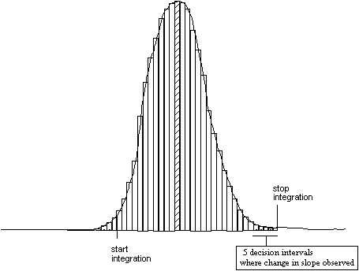
High Performance (or High Pressure) Liquid Chromatography
Fundamental Concepts
These concepts apply to chromatography in general, but are usually considered more relevant to HPLC.
The Phases in Column Chromatography
The mobile phase of the column is the phase of the column that is mobile...which moves. When a column has a flow of solvent, the mobile phase is the solvent and whatever its composition is. When the column is injected with substances to be resolved or separated, the mobile phase now includes the substances injected. Once all substances are eluted from the column, the mobile phase once again becomes the solvent alone.
The
stationary phase
of a column is that material or substance or
packing
of the column that is intended to interact with substances
injected
or
loaded
on to the column, and by this interaction achieve a separation of the
substances, as each substance will interact differently with the
stationary phase, and move with the flow of the mobile phase.
Resolution or separation is achieved by the variable interaction of substances that interact with the stationary phase and become part of it during that interaction, and then which interact with the mobile phase and flow down the column during that interaction. So long as the substances do not react chemically with the stationary phase (such as covalent bonding) to become permanently and irreversibly part of the stationary phase, they should elute from the column eventually.
In an isocratic separation, the composition of the solvent in the mobile phase does not change at all during the chromatography. This means that the substances separated interact with the stationary phase and then with the mobile phase within a time period
In a gradient separation, the composition of the solvent is usually changed in order to hasten the elution of substances whose interaction with the stationary phase is quite strong, and whose eventual elution would require too much time (usually) or too many resources (flow of solvent).
Retention Times and Peak Widths
A chromatogram is a plot of some kind of signal versus time. The signal represents the design of the chromatographer to detect a particular property of substances (absorbance a particular wavelength, radioactivity, conductivity, refraction of light, electrochemistry, etc.). This is on the y -axis or ordinate of the plot, and interesting signals will be seen as symmetrical Gaussian peaks.
The x -axis or abscissa is typically a plot of time ideally. In some cases it will be a plot of fraction number or volume of mobile phase passed, but since the flow rate (or flow rates, in the rare cases of inconstant flow rates) and volume of fraction collected are known, conversion to a time-based plot is straightforward.
Peaks elute from column with a certain time. Those peaks representing substances that interact with the stationary phase of the column are considered to be retained peaks, and the times in which they elute from the column retention times , designated t R i . Here i is a value 1,2,3... reprsenting a substance and the order of elution from the column.
Substances that are not retained by the column, that is they have no interaction whatsoever, usually elute first and in a large or small peak, depending upon whether they have the properties which are being detected. The time between injection/loading of the column and the elution of unretained substances is called the void time (or sometimes called dead time ). This time is designated as t 0 .
Another property sometimes considered is the net retention time . This is the difference between the total retention time, t R i , and the void time, t 0 . This is designated as t′ R i = t R i − t 0 . Many of the equations below involve computation of the difference between the total time a substance is eluted (retained) and the void time, so net retention time is a useful quantity.
The linear velocity or linear flow rate is a better expression for the flow rate of mobile phase than volumetric flow rate F (in ml/min or cm 3 /min):
| u = | L |
| t 0 |
L is the column length. Since t 0 represents the time it takes for unretained substances to traverse the length of the column after injection, and the linear movement or flow of those substances is dependent on the mobile phase linear movement or flow, t 0 thus represents the time it takes the mobile phase to move from the top of the column to the bottom of it. Thus the linear velocity is a value of mm s −1 or cm s −1 or cm min −1 .
Capacity Factor: k′
The capacity factor is defined as:
| k′ i = | t R i − t 0 | = | t′ R i |
| t 0 | t 0 |
This assumes a constant mobile phase flow rate (linear velocity). In the event that the flow rate is not constant, one uses this definition of k′ to describe capacity:
| k′ i = | V i − V 0 | = | V′ i |
| V 0 | V 0 |
where k′ i is the capacity factor for substance i ( i is usually an ordinal numeral designating the substance and its order of elution relative to other substances). t R i , t 0 , and t′ R i have been defined above. Because k′ is a function of the retention time, it is thus dependent on factors that also affect retention time. These include the chemical properties of the substance, the solvent of the mobile phase, the stationary phase and the quality of its packing, the column temperature, and many other minor factors.
A substance with k′ = 0 is one that comes out with the void time, and is unretained. A substance with k′ ≥ 1 will have a t R ≥ 2 t 0 . It is not unusual to have a k′ > 1, but optimization of chromatographic conditions makes attempts to reduce k′ in order to reduce analytical times so that more analytical cycles can be achieved.
Selectivity or Relative Retention: α
The selectivity is a measure of the relative retention of two components in a mixture. It is also called a separation factor and represents the ability of the chromatographic system to distinguish between two substances. It is a function of the column packing and the elution conditions.
| α = | k′ i + j |
| k′ i |
Here the denominator is the k′ for a reference compound typically, and is the earlier eluting compound. Since k′ is dependent retention time, α is certainly dependent upon retention time:
| α = | t R i + j − t 0 | = | t′ R i + j |
| t R i − t 0 | t′ R i |
Again this is a substitution of the capacity factors with their function, when it retention times are allowed to be a factor in constant mobile phase linear flow rate; otherwise retention volumes are used when flow rate is not constant.
Because t′ R i + j ≥ t′ R i , it is always the case that α ≥ 1. Of course when α = 1, t′ R i + j = t′ R i and there is no separation.
α is independent of certain factors that are dependent factors for retention time. Factors that affect t R are column construction (column length, packing quality) and linear velocity u (flow rate); these factors do not affect α. α is still dependent upon temperature, and the composition/chemistry of the mobile and stationary phases.
Theoretical Plate Count: n
The resolution of a column is its ability to separate substances. Baseline resolution refers to the ability of a column to separate substances virtually completely. That is, according to the signal, a substance was completely eluted before another substance started eluting. A theoretical plate is a term borrowed from distillation in which one substance could be separated from another by a set of plates present in a distillation apparatus, based upon the differences in their condensation temperature, and the set of plates in the apparatus that made separation possible based on those differences. A theoretical plate count , designated n , refers to the effective number of peaks of approximately the same height (signal) that can be formed in a chromatogram and whose signal goes to zero (the baseline) from peak to peak. The equation describing this can be derived using principles related to signals whose rise and fall forms a Gaussian peak:
| n = 16 ( | t R i | ) 2 | = 5.54 ( | t R i | ) 2 |
| w | w ½ |
Here w is the peak width at the baseline. However, baseline peaks are often difficult to measure and there is a difference of opinion about how to measure them. An alternative is to measure the peak width at the half height w ½ . The resolution of any system is effectively the point x at which it appears divided by Δ x which is measure of the dispersion or broadening of the peak. Thus the retention time is divided by the time span that is w ½ as a measure of resolution. The number of theoretical plates n is a calculation of the ability of a column to resolve many components.
The height equivalent to the theoretical plate (HETP), h , is the length in which chromatographic equilibrium is established.
h = L / n
where L is the column length and n is the number of theoretical plates. The smaller h is, the better the resolving power of the column. Because it depends on n , h depends on particle size, flow velocity, mobile phase viscosity, and packing quality.
Symmetry is another factor that is used to determine column performance and how to make adjustments to improve it:
Symmetry = B / A
where B is the time span representing the difference of the time of the peak at 10% of the peak height after the peak has been reached minus the time at the height of the peak, and where A is the time span representing the difference of the time at the height of the peak minus the time at 10% of the height of the peak. Others might define symmetry as the area of the peak to the right of the line to the peak height divided by the area of the peak to the left of the line to the peak height. A symmetry < 1 indicates peak fronting, while a symmetry > 1 indicates tailing.
Resolution R s
Resolution is the ability of peaks to be separated at the baseline. It can be estimated as a function of the capacity factor, selectivity, and theoretical plate count.
R s = (1/4) [(α − 1)/(1 + k′ )] √(N)
Preparative HPLC
These notes are abstracted from Macherey-Nagel Chromatography Catalog, Edition IV, 2004 (ChromCat e4/9/0/2.2004 DP).
Preparative HPLC has different goals from analytical HPLC. Whereas resolution (and peak shape) are the focus of analytical HPLC, the primary goal of preparative HPLC is recovery of the analyte, the properties of interest in the recovered analyte include secondary goals of purity, yield, throughput, and cost-effectiveness. Typically there is a compromise made between purity (resolution) and yield. Columns are often overloaded if throughput is to be maximized, and any resolution is dependent upon injection volume and sample mass.
Loadability
The loadability of a prep column is the maximum sample size (referring to defined sample mass and volume) that can be injected with the column retaining its optimum selectivity. Although many theoretical treatments have been undertaken to calculate mass loadability, the usual practice is to determine it experimentally.
Estimation of mass loadability can be made using the following equation:
M = C 1 πr 2 lKdA S √ C 2 d P 2 / l
where C 1 and C 2 are constants, r is the column radius, l is the column length, K is a partition coefficient, d is the packing density, A S is the adsorbent surface, and d P is the particle diameter. As the term d P 2 / l is a term that affects the plate number N (the inverse of the term is proportional to N ), mass loadability decreases with increasing plate number.
Volume loadability depends on the dead volume of the column used with some contribution of the separation efficiency of the column.
V L = V 0 [(α − 1) k′ A − (2/√ N )(2 + k′ A + k′ B )]
where V L is volume loadability (or maximum overload volume), V 0 is dead volume, α is the relative retention ( k′ B / k′ A ), N is theoretical plate number, and k′ are capacity factors.
Stainless Steel Surfaces in (HPLC) Columns
Source: K. E. Collins, C. H. Collins, C. A. Bertran (2000) LC GC Europe 13 (7): 464-470.
Stainless steel is usually the material used in constructing HPLC columns because of the following properties:
- machinability
- ductility
- hardness
- strength
- inertness
- low cost
Stainless steel comes in different types , classed as a three-digit number, such as 304 or 316. All stainless steels contain a minimum percentage (10.5%) of chromium to give the steel corrosion resistance. Nickel and/or molybdenum may also be added to provide an extra level of corrosion resistance as well as enhanced hardness and ductility. Type 316 is usually the stainless steel class used to produce chromatography columns. (For more information about the history and properties of stainless steel, go here .)
Corrosion
During the course of use in chromatographic procedures, its surface can acquire deposits of adsorbed materials, and these may cause corrosion. Nitric acid at concentrations of 10-30% (1.5-5 M) can dissolve stainless steel surfaces, but at concentrations of 50-100% (7.5-15 M) will not!
Parts/Kits for HPLC
Many parts on an newly assembled HPLC system have a certain lifetime based on standard wear-and-tear. The distinction between equipment and consumables should be considered of light of this wear and tear.
A standard maintenance and repair kit for an HPLC system should include:
-
Tubing
Tubing is what carries mobile phase and solvent from one component or element of the HPLC system to another: from solvent bottle to pump to injector to guard column or frit (if there is one) to column to detector to fraction collector (if they are part of the system). Traditionally the tubing has been stainless steel: it is generally inert to most mobile phases used in HPLC and it withstands the high pressures required of the system. However, in recent years, a lot of plastic tubing is put on the high pressure components of the system, particularly for biocompatible chromatography.In the old days, it was sometimes necessary to flare or make a flange tubing. This helped to create a seal between the tubing and its connection. A heating iron designed to flange tubing is made hot, and then the tubing is flanged. Nowadays, there are flangeless fittings that eleminate this heating step.
All tubing that connects particularly the high pressure elements is usually 1/16" (one-sixteenth inch) outside diameter. What varies a great deal is the inside diameter. It is vital to select tubing with the correct inside diameter, and to limit the length of tubing between HPLC system components as much as possible. This reduces the headspace or dead volume in which chemical constituents might become diluted or where separated components are re-mixed if the dead volume is too much. The typical inside diameter is 0.010". A 1-foot length of that tubing contains about 15 µl
-
316-stainless steel
Steel is composed mostly of the element iron (Fe) but has other elements added to it to produce hardness and resistance to oxidation (making it an iron alloy). The316
in fact refers to the percentage of other elements making up the alloy of iron: 3% is molybdenum (Mo) and 16% is chromium (Cr). It also has about 10-14% nickel, and there is traces of manganese (Mn), silicon (Si), carbon (C) and other elements present. These all provide the properties desirable in this steel product. -
polyether ether ketone (PEEK)
This is relatively inert (unreactive) type of plastic tubing that withstands high pressures, and is used when biocompatibility is a high priority (when contact with stainless steel tubing might inactivate proteins that must otherwise retain their biological activity). -
teflon (PTFE)
This is basically for use on HPLC systems where pressure is not a factor and chemical inertness is a high priority. It is typically used in the lines running from the solvent bottles to the low pressure inlet check valve on the pump head(s). Tubing with 1/8" outside diameter and 1/16" inside diameter is used. For fittings, the flangeless compression (fingertight) nut is preferred, with flangeless ferrule that creates leak-proof seals without flanging (flaring) the tubing.
-
316-stainless steel
-
Fittings & Ferrules
Fittings are effectively the entire assembly that binds or connects tubing to an element of the system (column, injector, pumps, etc.). This often composed of anut
or compression fitting with threaded body and a hexagonal head for tightening by a wrench (spanner) or a knurled head for finger-tightening. The other necessary component is the ferrule , which is a conical body that creates the seal between the tubing and connected component. It is conical because during tightening, the ferrule isswaged
to create a seal and it also locks itself to the tubing. During the initial fitting it is essential to insert the tubing into the element as far as possible so that no headspace or dead volume is created in which flow can pool or eddy.Steel fittings are used for steel tubing, and plastic fittings for plastic tubing. For PTFE tubing, a nut made of PEEK, Delrin, Polypropylene, ETFE (Tefzel) or PPS are all options.
-
Tools
-
Tubing cutter
A knife cutter for plastic (teflon and PEEK) tubing and a cutter wheel for stainless steel is essential. The cutters must be sharp, and not make cuts that leave inside or outside burs. -
Adjustable and fixed-size wrenches (spanners) in a range of
sizes in both metric and U.S.-inch systems
These are necessary for tightening and loosening fittings of all types to the tubing.
-
Tubing cutter
Information about HPLC fittings and components can be found in an Upchurch Scientific document .
Chromatography Media
Reversed-Phase HPLC Media
Some abbrevations commonly accounted:
- RP
- Reversed-phase
- RPLC
- Reversed-phase liquid chromatography
- RP-HPLC
- Reversed-phase high performance liquid chromatography
Reversed-phase chromatography refers to the change in the bonding chemistry in the normal phase. The standard support for these media is gelled or precipitated silica. This is a polymeric support involving –O–Si(O[H/Si]) 2 –O– repeats. Note that the branching oxygen atoms from silicon atoms can be bonded to other silicon atoms or to protons. The proton is acidic when the pH is in the alkaline range (the p K a is above 8 or 9), and the silica support can hydrolyze (dissolve) over time if the pH of the mobile phase is kept high.
The unmodified silica column is called the
normal
phase. Silica gels on the surface have hydroxyl groups, with a polar
covalent bond between the oxygen atom and the proton. Molecules
dissolved in the mobile phase which have these same polar covalent bonds
will like have an affinity for the silica surface. These polar covalent
bonds include molecules that can make
hydrogen
bonds: thus protons forming hydrogen bonds with the non-bonding electron
pairs on oxygen atoms, or electronegative atoms (oxygen, nitrogen)
forming hydrogen bonds with the hydrogen atom on silica hydroxyls will
be slowed in their movement through the column because of an affinity
for the stationary phase that retards them. Some molecules may even
stick
(tightly bind noncovalently) to the column and require elution with a
mobile phase whose composition competes with the surface reactivity of
the silica stationary phase. Common mobile phase components used in
mobile phase elution might be tetrahydrofuran, which provides an
electronegative oxygen as well as a hydrophobic portion to
pull
bound molecules off the column.
With reversed-phase columns, the hydrophilic
normal
phase of the stationary phase is
reversed.
That is, the surface chemistry of the silica is made hydrophobic by
chemical modification of the surface. The typical approach is to use
alkyl chains of different link. The silica is treated to produce an
ether linkage to hydrocarbon alkyl chains of different carbon length:
four carbons, eight carbons, and eighteen carbons. Thus the columns are
called C
4
, C
8
, and C
18
. The greater the carbon length, the greater the hydrophobicity.
Most organic molecules have hydrophobic character. This includes many biomolecules, such as proteins and peptides. Perhaps the only class of biomolecules that would not be used to purify or separate on RP columns would be mono- or polysaccharides. All the carbons of sugars usually have hydroxyl groups on them that make the molecule highly polar. So a different type of column would be selected for sugar analysis or preparation by chromatographic means. With purification of large intact proteins, one would prefer an RP column with lower hydrophobicity, such as a C 2 or C 4 column, although C 18 columns are sometimes used (those with nonporous silica particles). The reason is that the proteins can stick to the column irreversibly, eventually clogging it. One can achieve useful separations with low carbon number RP columns. Peptides are usually purified on C 18 although sometimes C 8 columns are used as well.
Note that with RP columns, the mobile phase composition is changed to increase the hydrophobicity of the solvent, whereas in normal phase, the hydrophilicity of the solvent is increased to obtain elution.
Non-silica supports
. Not all chromatography media supports are silica-based. The so-called
polymer
supports were produced to extend the pH range into the alkaline region.
They are relatively chemically inert or resistant compared to silica.
The early supports were usually polystyrene-based structures, but now
many manufacturers offer a wide variety of typically patented supports,
many of them combinations of silica capped with polymers, claiming to
offer the best of silica supports and the best of chemically
inert/resistant polymer-based supports.
Hydrophobic interaction media
Hydrophobic interaction chromatography (HIC) is similar to RP in that a hydrophobic ligand attached to the stationary phase is used to bind to (or create a slowing-down affinity for) components of interest dissolved in the mobile phase and passing through the column.
Pharmacia brand
(This text abstracted from a data sheet provided by Pharmicia for hydrophobic interaction chromatography and is taken virtually verbatim from R. M. (1990) Meth. Enzymol. 182 , 339-343.)
Hydrophobic interactions result more from the nature of the interaction of chemical functional groups with water. Anything that serves to affect the activity/structure of water as the solvent making up a solution will affect dissolved substances in the water. High ionic strength, as it serves to affect water structure, affects the expressed hydrophobicity of proteins—in general, increasing their hydrophobicity. Listed in series of the order of tendency to effect the highest hydrophobicity, the anions PO 4 3− > SO 4 2− > CH 3 COO − > Cl − > Br − > NO 3 − > ClO 4 − > I − > SCN − and the cations NH 4 > + > Rb + > K + > Na + > Cs + > Li + > Mg 2+ > Ca 2+ > Ba 2+ . Note that chaotropic salts disrupt the structure of water and decrease the strength of hydrophobic interactions while the antichaotropic salts favor them.
Globular proteins with hydrophobic side chains sufficiently exposed will bind to HIC media. A column is equilibrated with a buffer of high ionic strength to adsorb protein, and the protein is desorbed with a descending salt gradient. It is possible to use other elements which are known to affect hydrophobic interaction other than ionic strength: use of detergents, temperature, ethylene glycol, pH, etc. are all used to optimize separation.
The matrix is a Sepharose (usually CL-4B) which is desulfated by alkaline hydrolysis under reducing conditions to eliminate any potential ion-exchange effects in the matrix. Phenyl or octyl groups are introduced by reaction of the gel with glycidyl ether, making the linkage a chemically stable ether. Substitution of 40 µmol groups/ml gel is expected and optimal.
The capacity of these HIC gels is about 15-20 mg human serum albumin/ml gel in 1 M ammonium sulfate in 10 mM NaP i , pH 6.8. Gels are autoclavable at pH 7.0.
In choosing a gel, phenyl-Sepharose is better since strongly hydrophobic proteins are not easily eluted with the more hydrophobic octyl-Sepharose. A phenyl ligand is intermediate in its hydrophobicity between n -butyl and n -pentyl. Besides binding to aliphatic side chains of amino acids, it is very likely to bind aromatic amino acids via π-π interactions. If the protein does not bind or elutes early, try octyl-Sepharose, which is good for weakly hydrophobic interactions. Octyl-Sepharose is particularly useful for membrane proteins, since these proteins will still likely bind in the presence of solubilizing concentrations of detergents.
Salts which promote salting out (ammonium sulfate) also promote binding to hydrophobic ligands. Protein samples can be applied in high concentrations of salt such as 1.7 M (NH 4 ) 2 SO 4 , 4 M KCl or 4 M NaCl in a buffered solution with pH in the range of 6.5 to 8.0. A 20-30% reduction in binding strength is observed when temperature is reduced from 25° to 4°, so use of a cold room can influence results.
Choice of elution conditions is designed to reduce hydrophobic interactions:
- reduce the concentration of salting out ions with a negative salt gradient.
- increase the concentration of chaotropic ions with a positive gradient.
- elute with a positive gradient of a detergent or with a polarity reducing agent, typically ethylene glycol (can be used up to 75%). Note detergent use requires special regenerating conditions to free the gel of detergent.
- raise the pH.
- reduce the temperature.
A combined use of these elution techniques may be tried to assist elution or effect even better separations.
Regeneration and Storage
The number of re-uses of the HIC media depends upon buffer and sample quality and other factors. After every run, wash the gel with 6 M urea to eliminate tightly bound proteins. Re-equilibrate and it is ready for the next sample.
If detergents have been used, wash the column with these solutions in this order: 1 bed vol. water; 1 bed vol. each of 25%, 50%, and 95% ethanol; 2 bed vols. of n -butanol; 1 bed vol. ethanol; 1 bed vol. water. Re-equilibrate and the gel is ready.
Ion-Exchange Chromatography
Bio-Rex 70 ion exchange medium
Bio-Rex 70 is a weak cation exchanger used for purifying peptides, proteins, and antibiotics. Resin ligands are carboxylic acid exchange groups bound to a macroreticular acrylic polymer lattice. The resin has a high porosity for penetration of large proteins so access to the ligands is possible. The acrylic polymer is free from nonspecific binding or denaturing effects on proteins.
Bio-Rex 70 can be placed in 4-5 volumes of the buffer in which it is to be equilibrated. Allow 30 min equilibration, then adjust the pH if necessary. Re-equilibrate and adjust until the pH is stable. Repeat many times until pH is stable.
In regenerating columns into the sodium form, wash with three bed vols. of 0.5 N NaOH using a flow rate of not >60 cm/hr (1 cm/min). When the pH>9, conversion is complete. Rinse with 4 bed vol deionized water, then equilibrate until pH is stable. Note resin volume will double in size when converting from the H + form to the Na + form. Converting to other counterions can be done using 0.5 to 1.0 M solutions of the appropriate counterion in a base form.
Thin-Layer Chromatography
Development Methods
Phosphate Esters
Several methods explored here.
-
This reagent useful for phospholipids on F
254
plates.
-
Reagent I: 0.42% ammonium molybdate in 1 N H
2
SO
4
this is about 0.5 M - Reagent II: 10% ascorbic acid
-
Reagent I: 0.42% ammonium molybdate in 1 N H
2
SO
4
-
From Burrows, Grylls, & Harrison (1952)
Nature
170
, 800:
- 1 G ammonium molybdate in 8 ml water + 3 ml HCl
- add 3 ml conc. (70%) HClO 4
- bring to 100 ml with acetone
-
From Trevelyan, Proctor & Harrison (1950)
Nature
166
, 444:
- 0.1 ml satd AgNO 3 diluted with 20 ml acetone
- add water by drops until the precipitate is dissolved
- pull paper rapidly through solution (or spray)
- spray with 0.5 N NaOH in EtOH (better to dilute NaOH-satd ethanol to make this reagent)
- Immerse in 6 N NH 4 OH for a few minutes
- wash 1 h in running water
-
From Wade & Morgan (1953)
Nature
171
, 529:
- spray medium with 0.1% FeCl 2 6 H 2 O in 80% EtOH
- dry, then spray with 1% salicylsulfonic acid in 80% EtOH
Sugars
Here are several methods for qualitative detection of sugars on paper or TLC.
Phenol Method for Total Sugars
This method should not be used on paper. Concentrated acid causes sugars to dehydrate in which hydroxyls are made leaving groups and elimination reactions yield alkenic polyols (furfurals). Phenol then condenses to form colored compounds.
Reagents .
- 80% (w/v) phenol
- 95.5% sulfuric acid (conc.)
Method . 2 ml of the sugar solution (the effective range requires 10 to 70 µG of sugar) is added to reaction tube. Add 0.1 ml 80% phenol. Add 5 ml of the conc. sulfuric acid and mix rapidly ; the stream should be added to liquid and not down side of tube. After 10 min., shake tubes, then set for 10-20 min in a 25-30° water bath. Measure the absorbance at 490 nm. Use distilled water for a zero point.
The degree of coloring is a function of the amount and nature of the sugars and the amount of added phenol. 40 µG glucose generally absorbs to 0.45, with 40 µG of fructose absorbing at 0.48. Maximal color with glucose occurs when 50 mg phenol is added, and with fructose it is 200 mg phenol.
Somogyi’s Method for Reducing Sugars
Note this method does not check for total sugars. See M. Somogyi (1952) J. Biol. Chem. 195 , 19-23.
Reducing sugars convert cupric ion to cuprous ion. The cuprous ion can then react with arsenomolydate.
Reagents . You may want to scale the reagents prep and method down, probably by one-half, since this recipe was scaled perhaps for equipment that required larger volumes in a previous age .
- Solution I : 12 G Rochelle salts, 24 G anhydrous Na 2 CO 3 , 16 G NaHCO 3 , and 144 G anhydrous Na 2 SO 4 in water, up to 800 ml.
- Solution II : 4 G CuSO 4 5 H 2 and 36 G Na 2 SO 4 dissolved in water to 200 ml.
- Nelson Reagent . 25 G of ammonium molybdate ( (NH 4 ) 6 MO 7 4 H 2 O ) is dissovled in 450 ml water; add 21 ml of conc. sulfuric acid. 3 G sodium arsenate (Na 2 HAsO 4 7 H 2 O) is dissolved in 25 ml water. Combine the solutions, and store in brown bottle for 1-2 d at 37°. Filter if necessary. Solution should be yellow and with no green tint.
Method . The effective range of measurement for the assay is 10-300 µG for this configuration.
- Count the number of tubes you will assay and multiply that by 1 ml. The copper reagent is made by mixing 4 parts Solution I with 1 part Solution II: so take 4/5 of the total volume for Soln I, and 1/5 of the volume for Soln II, and mix.
- 1 ml of a sugar solution is mixed with 1 ml copper reagent.
- Cover the tube with a glass marble and heat in boiling water bath for 10 min.
- Let cool, then add 1 ml Nelson reagent. Agitate to bring the Cu 2 O into solution.
- Dilute with water up to 5 mL.
- Read at 600 nm, since the color develops instantaneously (the color is stable for several hours)
More methods
This detects reducing sugars: 3%
p
-anisidine HCl in
n
-butanol
From Haugh, Jones, & Wadman (1950)
J. Chem. Soc.
, p. 1502.
Aniline salts can also be used. Prepare 75 mM analine and 150 mM phosphoric acid in a 12:88 water: n -butanol solution. Spray on medium, then put in oven at 105° for three minutes. The table shows the appearance of various sugar classes:
| Sugar | Spot Color |
|---|---|
| aldohexoses | brown |
| ketohexoses | pale brown |
| aldopentoses | reddish brown to red |
| ketopentoses | pale red (pink?) |
All spots will fluoresce under UV.
From Schwimmer & Renvenne (1956) Science 123 , 543: 4 ml aniline + 4 G diphenylamine are dissolved separately in acetone, then brought to 100 ml with same (not sure about this, check reference). These are combined, then 20 ml conc. (85%) phosphoric acid is added. Paper is dipped (or medium sprayed). After drying, heat at 80° for 5 min.
Affinity chromatography
(Notes from Wilchek, M., Miron, T., Kohn, J., (1984) Meth. Enzymol. 104, 3-55)
Column activation chemistry
Historically column matrix has been activated with CNBr. The carbon atom in the CNBr molecule is quite nucleophilic.
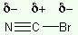
The hydroxyl groups of the polysaccharide matrix are prepared by use of a fairly high pH, though not high enough to caramelize the matrix. The activation is a two-step process. In the first step, the CNBr is attacked by the alkoxide groups of the matrix (R-O − ) to form a variety of products:
| 1. cyanate esters | 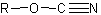 | most reactive and therefore most desirable groups for attaching the ligand |
| 2. cyclic imidocarbonates | 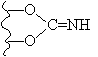 | only slightly reactive and appears to form as a result of an attack of the cyanate ester by the -OH bonded to the adjacent carbon |
| 3. linear imidocarbonate | 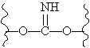 | occurring with cyclic imidocarbonate formation, but result from an interchain rather than intrachain attack. It is only very slightly reactive. |
| 4. carbamate | R–OCONH 2 | completely inert (and useless), it results from a hydrolysis (hydration) of the active cyanate ester |
The cyanate esters are stable below pH 4, whereas the imidocarbonates
are stable in basic conditions. Studies with Sepharose show that 60-85%
of the resin's total coupling capacity is because of the formation of
cyanate esters.
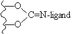
The second step involves ligand binding with a ligand having a primary amine (H 2 N-ligand). The ligand attacks the cyanate ester, forming an isourea derivative [–O–C(=NH)–NH-ligand]. The imidocarbonates are attacked to form either the isourea derivative, an N -substituted imidocarbonate (see diagram), or an N -substituted carbamate [–O–CO-NH-ligand].
NaOH or Na
2
CO
3
have been used classically, but now triethylamine is preferable as the
cyano-transfer
agent. Done at neutral pH, less than 10% of the usual amount of CNBr is
used, and the result is an activated resin free of imidocarbonates and
carbamates, with only active cyanate esters. 75 µmol ligand per gram wet
Sepharose 4B is obtainable.
The incorporation of active cyanate esters directly varies with the
amount of CNBr used: µmol cyanate esters/G drained Sepharose 4B = 2 * mg
CNBr/G drained Sepharose. (The constant
2
can be dimensioned as 2 µmol cyanate ester/mg CNBr.) The kind of
activation can be classed as
weak
(up to 8 µmol cyanate ester/G 4B),
moderate
(8-20 µmol cyanate ester/G 4B), and
strong
(20-32 µmol cyanate ester/G 4B). Commercially available product is
moderately activated (at 16 µmol ester/G). Superactivated resins are
theoretically obtainable.
Method of CNBr + TEA
10 G wet Sepharose 4B is washed and suspended in 10 ml 60% acetone, cooled to −15°. After selecting the desired degree of activation according to the formula above, the required volume of CNBr (as a 1 M solution in acetone) is added to the agarose suspension. TEA (1.5 M in 60% acetone) is added dropwise over 1-3 min with vigorous stirring and cooling. A final molar ratio of CNBr:TEA is 1:1.5. After 3 min, the entire mixture is poured into 100 ml ice-cold washing medium (acetone:0.1 N HCl, 1:1). The resin is stored in the medium at ~0° for about 60 min without significant loss of activation.
[This article also describes procedures using in place of CNBr, the activators p-nitrophenyl cyanate, N -cyanotriethylammonium tetrafluoroborate, and 1-cyano-4-dimethylaminopyridinium tetrafluoroborate. It also describes how to determine the extent of activation by giving assay methods for total nitrogen content, ammonia (by ninhydrin), imidocarbonates (by conversion to ammonia for ninhydrin assay), and cyanate esters (using a color reaction between pyridine and barbituric acid. Other methods of activation are provided as well.]
For information on activating agents, see also Kohn, J., Lenger, R., Wilchek, M. (1983) Appl. Biochem. Biotech . 8 , 227; and Kohn, J. & Wilchek, M. (1983) FEBS Lett. 154 , 209.
Ligands & Specificity
(Notes taken from Ostrove, S. (1990) Meth. Enzymol. 182 , 357-371)
Choice of matrix is important. Necessary properties are:
- Hydrophilic to reduce nonspecific interactions.
- Large pore size to allow all areas of the matrix to be availalbe to molecules in a mixture.
- Rigidity of the matrix to withstand packing and solvent flow pressures during elution/washing.
- Inertness to keep matrix from contributing to the separation
- Chemical stability to make matrix unreactive to materials to be separated.
Base the choice of gel on the ligand and sample. Note the table of common ligands and the proteins they purify.
| Ligand | Specificity |
|---|---|
| NAD, NADP | dehydrogenases |
| lectins | polysaccharides |
| poly(U) | poly(A) (eukaryotic mRNA) |
| poly(A) | poly(U) |
| histones | DNA (not sequence-specific) |
| Protein A | F c of IgG |
| Protein G | antibodies |
| lysine | rRNA, dsDNA, plasminogen |
| arginine | fibronectin, prothrombin |
| heparin | lipoproteins, DNA, RNA |
| Blue F3G-A | NAD + |
| Red HE-3B | NADP + |
| Orange A | lactate dehydrogenase |
| benzamidine | serine proteases |
| Green A | Coenzyme A proteins, HSA, dehydrogenases |
| gelatin | fibronectin |
| polymyxin | endotoxins |
| 2´,5´-ADP | NADP + |
| calmodulin in Ca 2+ | kinases |
| boronate | cis-diols, tRNA, plasminogen |
| Blue B | kinases, dehydrogenases, nucleic acid-binding proteins |
If a coupling chemistry is to be done with the ligand to the matrix, the following common chemistries are available:
| Linkage | Ligand group | Spacer length | Active pH | Specificity |
|---|---|---|---|---|
| CNBr | NH 2 | 8-10 | proteins, peptides | |
| Thiopropyl | SH | equiv. to about 13 carbons | 9-11 | sulfhydryls |
| Thio | SH | 9-13 | sulfhydryls | |
| Epoxy |
NH
2
OH SH |
equiv. to about 11 carbons |
9
10 11 |
proteins, peptides
carbohydrates sulfhydryls |
| Tresyl | 2 | 8-10 | proteins, peptides | |
| Aminohexyl | COOH | 6 | amino acids, proteins | |
| Carboxylhexyl | NH 2 | 6 | carboxylic acids |
As for choice of spacer arms, the following table is a good guide as to whether to use one. A spacer 6 carbon atoms long is usually a good place to start.
| Ligand | Protein | Best spacer arm |
|---|---|---|
| Small | Small | Short |
| Small | Large | Long |
| Large | Small | None |
| Large | Large | None |
p13 Affinity Chromatography for p34 Subunit Purification
Vulliet method
- Prepare Bead Buffer B as per Meijer et al., EMBO J. 8: 2275.
- Dispense 20 µl of Bead buffer, or 10 µl or 20 µl of p13-Sepharose affinity beads.
- Add 25 µl of (Pool B) PDPK from ?
- Vortex. Incubate @ 4°C for 30 min with frequent vortexing.
- Centrifuge for 5 min @ 4°C. Decant supernatant in control supernatant. 10 µl sup. and 20 µl sup. Wash pellets 3 times with Bead buffer. Decant to 20 µl.
- Assay the supernatant: 5 µl TrisOAc, 10 µl peptide, @ 30° C, &c. with 10 µl supernatant.
Protein Chemistry
Purification
Several questions need to be asked when beginning to undertake the purification of a protein, a purification for the purpose of preparing the protein for use of its biological activity or for analysis of its structure or function.
The first and most important question is whether the protein is an enzyme . Enzymes are proteins with catalytic activity and must maintain a native (non-denatured) state to perform this function.
Other questions:
- What is the best source for the protein? That is, where is it likely to be expressed in the biologically active form that is wanted? Which tissues, cells, organisms?
- In the first extraction of the protein, what substances should be part of the buffer to maintain its stability? (Note that it is not necessary to make the protein active, merely stable.) Does the protein bind cofactors or coenzymes or metal cations, and should they be present? Is the protein easily oxidized and made inactive? If so, what about reducing agents?
- Are general chromatographic steps (ion-exchange, gel fitration, hydrophobic interaction) better at the beginning? Is an affinity chromatographic step possible? Should it be used at the beginning?
Total Protein Assay
Lowry Assay
from Lowry, Rosebrough, Farr, and Randall (1951) J. Biol. Chem. 193 , 265.
Reagents A and B can be prepared and stored for weeks to months. Reagents C and D are prepared on the day of the assay.
Reagents
-
Reagent A
*
- 0.5 G CuSO 4 5 H 2 O
- 1 G trisodium citrate
- dissolve and qs to 100 mL water
-
Reagent B
- 20 G Na 2 CO 3 (2%)
- 4 G NaOH (0.1 M)
- dissolve and qs to 1.0 L water
-
Reagent C
The volume in mL is = # tubes × 2.5 mL × 1.15
Add 1/51 of that volume as Reagent A to 50/51 of that volume as Reagent B. -
Reagent D
The volume necessary is one-tenth (0.1) the volume of Reagent C.
Dilute Folin-Colcateau reagent by 1:2 (from 2 N → 1 N) to the necessary volume.
* Reagent A is actually an improvement on the original reagent, which made use of a Cu-tartrate complex (see Legget-Bailey, 1967, Techniques in Protein Chemistry , 2nd Ed., p 340).
Procedure
- 0.5 mL of unknown sample (should contain ≤ 0.5 mG protein)
- Add 2.5 mL Reagent C. Let stand 10 min
- Add 0.25 Reagent D. Let stand 20-30 min.
Biuret (Lowry-type) (done at Chiron)
From Sutherland, E. W., Cori, C. F., Haynes, R., Olsen, N.S. (1949) J. Biol. Chem. 180 , 825.
Prepare:
- Solution A: 30 G anhydrous Na 2 CO 3 and 4 G NaOH are dissolved in 1 L water.
- 2% CuSO 4 * 5 H 2 O
- 4% sodium-potassium tartrate
- Reagent B (prepare fresh daily): 50 ml of solution A + 0.5 ml of 4% NaKtartrate + 0.5 ml 2% copper salt. Add the tartrate first or a cloudiness may occur!
- Folin-Ciocalteau reagent is purchased as 2 N and diluted 1:1 with water.
- 10% sodium desoxycholate in 0.01 N NaOH
Procedure:
- The sample is prepared in a total 0.4 ml volume.
- 0.1 ml of 10% desoxycholate in NaOH is then added
- 2.5 mL of reagent B is added. The tube is vortexed and sits for 10 min
- 0.25 ml of the Folin reagent is added and this now stands for 30 min
- The sample is read at 750 nm. A standard curve range of 10 to 100 µG is appropriate.
Quantitative Coomassie Dye Binding
- Dissolve 0.1 G Coomassie Brilliant Blue G-250 is dissolved with vigorous shaking in 50 mL 95% EtOH
- This solution is then mixed with 100 mL 85% H 3 PO 4
- Dilute to 1 liter with water
- Filter to remove the undissolved dye (this is very important!)
- Keep refrigerated. Should be stable for 1-2 weeks, perhaps longer.
Alternatively:
- Dissolve 0.6 G Coomassie Brilliant Blue G-250 in 1 liter of 2% perchloric acid (HClO 4 ).
- Filter the solution.
- The absorbance at 465 nm should be between 1.3 and 1.5, and this solution should be stable indefinitely.
The procedure is to mix 0.1 mL of the protein-containing solution (not more than 50 µG total protein) with 2.5 mL of reagent. After a few minutes, the color should be stable and can be read at 595 nm.
Precipitation
Notes from Englard, S. & Seifter, S. (1990) Meth. Enzymol . 182 , 285-300 and from Ingham, K. C. pp. 301-306, on precipitation with PEG)
The history of discovery indicates processes used by not obviously understood in detail: such as use of dilute acid to precipitate casein in milk. Early studies formed a basis for classifying protein: globulins were defined as insoluble in water or dilute salt solutions, while albumins were soluble in these conditions but not in high concentrations of ammonium sulfate. With modern understanding, many water soluble proteins such as hemoglobin and serum albumin are in fact globular proteins.
An understanding of the empirical data leading to development of a theoretical explanation for precipitation should begin with an understanding of the molecular nature of protein in solution, with formation of a stable conformation at a state of minimum energy in consideration of ion-ion, ion-dipole, dipole-dipole, and hydrophobic interactions. Perturbations of the physical nature of the solution or the protein molecule can lead to new conformations with the dissolution of old bonds and the formation of new ones. These molecular structural rearrangements (denaturations) usually produce a molecule without its intended functional capability, and even restoring solution characteristics to a nondenaturing state may not reverse the effect, that is, restore the protein's structure and therefore its function. Perturbations in the solution can come through changes in its pH, which can bring a protein toward its isoelectric point, the point where a protein is likely to have its minimum solubility in solution.
Many salts have been used to precipitate, solubilize, and fractionate proteins. NaCl (5.33 M saturation at 20°), Na 2 SO 4 (1.88 M saturation at 20°), and (NH 4 ) 2 SO 4 (about 4 M saturation in 0-25° range) are but a few examples. Ammonium sulfate is chiefly used for several reasons.
While everyone typically fractionates proteins by precipitation after increasing the salt concentration, another technique involves back extraction of precipitated protein. The technique involves initial precipitation to 80-85% saturation. Solutions of decreasing saturation (ea. volume ~10% original volume) are used to extract the protein fractionally from the precipitate.
Note that protein solutions should be between 5-30 mg/ml total protein. Precipitation of dilute solutions is problematical since losses may be greater: some protein is nearly always soluble in high concentrations of ammonium sulfate.
Precipitation with PEG
Previously considered in an earlier volume of Methods in Enzymology (Vol. 104, 351), this method as a means of precipitating protein first introduced by Polson et al. ( BBA 82: 463, 1964). Unlike simple organic precipitating agents, PEG does not denature or otherwise interact with proteins even at high concentrations or elevated temperatures. PEG-400 at concentrations up to 30% (w/v) had no detectable effect on CD spectra or thermal denaturation temperature of ribonuclease. (Other studies show this to be true in the case of ribonuclease, but PEG may destabilize other proteins.) There are many advantages of using PEG in preference to ethanol or ammonium sulfate: a shorter time for precipitated proteins to equilibrate to a physical state for large scale centrifugation, and facilitation of the growth of protein crystals.
Typically the nominal avg MW of PEG chosen is 4000 to 6000. Larger polymers tend to be more viscous, and the precipitation curves are not much different than those in which PEG-6000 is used. Decreasing PEG below an average 4000 means that precipitation of the mixture spreads out over a broader range of PEG concentrations. In some cases a greater degree of purification can be obtained: use of PEG 400 versus PEG 4000 or 6000 resulted in a 2-fold greater purity of γ-glucosidase from yeast extract.
Determining what concentration of PEG to use is first done on an analytical scale. Set up duplicate tubes containing fixed volumes (100 to 500 µl) of the mixture to be precipitated. Now add an equal volume of buffer containing increasing concentrations of PEG to produce a final concentration of 25-30% in the most concentrated tubes. PEG should be buffered as its presence can induce pH changes. Increments of 3% PEG are useful in the study. Gentle or vigorous mixing depends upon whether the protein can stand such stress. After 30-60 min at RT or on ice.
Specific cleavage of Proteins
Most chemical methods of cleaving proteins are of low specificity or are useless in that they degrade amino acid side chains. Partial hydrolysis with acid (excepting the mild conditions used to cleave Asp-Pro bonds) and oxidative cleavage with N -bromosuccinimide (Ramachandran and Witkop, 1967) are examples. CNBr cleavage of methionine residues is well-established, but the cleavage of Cys residues via cyanylation with 2-nitro-5-thiocyanobenzoate, and cleavage of Trp with 2-(2-nitrophenylsulphenyl)-3-methyl-3-bromoindolene (BNPS-skatole), o-iodosobenzoic acid or dimethyl sulfoxide/HCl/HBr. cleavage at acyl-proline bonds with Na in liquid NH 3 has been reinvestigated by Hempel and Jörnvall (1985), with variable yields obtained, but with the method perhaps having some value.
cleavage with cyanogen bromide CNBr
Gross and Witkop (1961) reported the cleavage of methionine residues with CNBr under acidic conditions, discussed in detail by Gross (1967). Ambler (1965) has shown that Met is converted to a mixture of homoserine and its lactone, and the reaction is illustrated.

There are problems with particular combinations. The Met-Thr bond, and to a lesser extent the Met-Ser bond, yield low yields of cleaved protein. It may be the case that the β-hydroxyl groups on their side chains interfere with the reaction (Schroeder et al, 1969). Conversion to homoserine occurs with peptide bond cleavage. Doyen and Lapresele (1979) have also reported a lack of methionine-cystine bond cleavage.
CNBr reaction conditions are done for 24 h at 20° in 70% (v/v) formic acid in water. Other acids (trifluoroacetic acid) have also been used with success. Side reactions, such as Asp-Pro (sensitive to acidic conditions), partial loss of side chain amide functions, partial cyclization or rearrangement of Asn-Gly sequences to the imide or β-aspartyl peptide, and cyclization of released N-terminal glutamine residues to the pyrrolidone carboxylyl residues are expected. Esterification of Ser and Thr with concentrated (88%) formic acid is known (Tarr and Crabb, 1983).
A broadening of HPLC peaks for peptides and proteins is possible, but treatment with neat aminoethanol may have some remedial effect. The use of CNBr which is neither pure or fresh or where precautions against auto-oxidation are not taken may result in the oxidative degradation of Trp residues, with cleavage at Trp bonds being observed (Blumenthal et al., 1975).
Cystine residues need not be reduced prior to CNBr cleavage, since they are not affected by the CNBr in acid. When Met does become oxidized, CNBr fails to react with the sulfoxide. The sulfoxide may however be reduced by a number of thiols (Jori et al., 1968; Neumann, 1972; Westhead, 1972; Houghten and Li 1983).
The following method should be satisfactory for most proteins:
In the event of Met auto-oxidation to its sulfoxide, the protein is pre-treated with 5% 2-mercaptoethanol at pH 8 for 24 h at room temperature, or with 0.7 M N -methylmercaptoacetamide in 5% acetic acid at 37° for 36 h (see Houghten and Li). The thiol is removed by dialysis.
The protein is dissolved to about 5 mg/ml in 70% (v/v) aqueous formic acid at 20°. A small amount (~ 5 mol/mol of Met residues) of tryptamine or tryptophan as scavenging reagents might be added to protect tryptophan residues. A 50-fold molar excess over the Met residues of CNBr (a weight generally equal to that of the protein), which should be colorless and free from non-volatile polymeric material, dissolved in a small volume of 70% formic acid, is then added with stirring. The mixture is incubated in the dark under oxygen-free N 2 , placed at 20-25° for 16-24 h. The mixture is then diluted with 15 vol water and lyophilized. Repeated lyophilization will ensure the complete removal of acid and by-products.
cleavage at cysteine residues after cyanylation
Catsimpoolas and Wood (1966) observed that cleavage of peptide chains can occur under alkaline conditions after the cyanolysis of disulfide bonds. Yields were found to be low because of several side reactions and because reversibility of cyanolysis and the elimination of thiocyanate. The reaction mechanism was investigated (Jacobsen et al., 1973; Degani and Patchornik, 1974) and conditions were developed to produce higher yields. Excellent yields are obtained when the soluble, denatured protein is used.
First Cys residues are converted to S-cyanocysteine by reaction with 2-nitro-5-thiocyanobenzoate (I) at pH 8. A large excess of (I) and a low total concentration of thiol groups is necessary to avoid a side reaction in which CN − is displaced from S-cyanocysteine by unreacted cysteine thiol groups. The excess reagents and by-products are removed by gel filtration in acidic solution, then the S-cyanylated protein is incubated at pH 9 to cause cleavage. This forms an amino-terminal iminothiazolidine-4-carboxyl residue from the S-cyanocysteine residue, with liberation of the α-carboxyl group of the preceding residue. However, the iminothiazolidine can not be subsequently sequenced by the PITC method, and so is not frequently used.
Notes on Protein Sequencing
- 20-50 pmol of sequenceable material is the lower limit necessary
- Up to 35 cycles can be ideally achieved with most material before background becomes significant with signal
- The process is largely unaffected by post-translational modifications
Use of PVDF membranes
| Advantages | Disadvantages |
|---|---|
| only partial purity is required | N -blocking is a problem |
| sequencing is rapid (1 day) | membrane has a finite limit for protein binding |
| good sensitivity--low background | membrane impervious to aqueous solutions |
| multiple sample capability | |
| in situ cleavage |
In situ cleavage
Proteins immobilized on blots can be processed by
- CNBr cleavage (at Met)
- protease digestion
In the protease digestion process, use the protease (trypsin), then wash the membrane in acid (TFA/formic acid) to lift away the small peptides. Purify these on HPLC and then sequence.
Edman reaction
Coupling
Phenylisothiocyanate (PITC) is added to prepared polypeptide fixed to cartridge surface. Care should be taken with peptide solubility (more soluble in aqueous environments) and PITC solubility (soluble in organic solvents). Polypeptides are more likely to react efficiently if previously derivatized by performic acid oxidation or by reduction and alkylation (2-mercaptoethanol + iodoacetamide). In a slightly alkaline environment (TEA), the free amino groups react quickly with the PITC.
cleavage
The temperature is raised to 50° and anhydrous acid, typically TFA, is added. A cleavage reaction in which the amino terminal residue should be liberated and then cyclize to form its thiazolinone derivative. Polypeptide remains in cartridge, with newly generated free amine function at an amino terminal less one residue.
Conversion
The thiazolinone derivative is unstable and is incubated in 25% TFA to convert to its more stable phenylthiohydantoin (typical of neighboring group rearrangement chemistry).

Sample requirements
- Purity should ideally be >80%. This allows the ability to sequence for a greater number of cycles.
- In the contest between amount vs. purity of sample, amount wins with some limitations. It is better to have 1 nmol of 75% pure sample than 100 pmol of 95% pure sample.
- Salts/buffer components should be 20 mM or less since they interfere with Edman chemistry
- Since Edman reactions depend upon reaction with primary amines, no urea, Tris, acrylamide, or ammonium salts are allowed.
- An initial protein estimation should be provided to the technician doing the work.
- Proteins that have been Coomassie- or gold-stained can be submitted directly for sequencing.
- It is preferred but not required that Cys residues have been previously modified with iodoacetate (iodoacetamide?)
Reagents for Labeling & Modifying Proteins
Notes from Hames, B. D., Rickwood, D., eds., Gel Electrophoresis of Proteins: A Practical Approach , Oxford: IRL Press, 1981, 290 pp.
For all biological molecules there are functional groups and these functional groups are reactive to a variety of compounds which usually come isotopically labeled.
| Reactive group | Labelling reagent |
|---|---|
| free amines (--NH 2 ) on lysines or N-terminal |
acetic anhydride
Bolton & Hunter reagent dansyl chloride ethyl acetimidate 1-fluoro-2,4-dinitrobenzene (Sanger reagent) formaldehyde isethionyl acetimidate maleic anhydride methyl 3,5-diiodohydroxybenzimidate phenyl isothiocyanate sodium borohydride/potassium borohydride succinic anhydride N -succinimidyl proprionate |
| thiols (--SH) on cysteine |
acetic anhydride
bromoacetic acid chloroacetic acid p -chloromercuribenzenesulfonic acid p -chloromercuribenzoic acid dansyl chloride N -ethylmaleimide iodoacetamide iodoacetic acid |
| phenolic hydroxyls (--C 6 H 5 OH) on tyrosine |
acetic anhydride
dansyl chloride iodine |
| imidazoles (--C 3 N 2 H 3 ) on histidine |
acetic anhydride
iodine |
| hydroxyls (--OH) on serine and threonine |
acetic anhydride
diisopropyl phosphofluoridate (DFP) |
The reagents for labelling have the following properties
acetic anhydride (
3
H- or
14
C)
A nonspecific acylating agent used to label every functional group in
protein with some functional groups being more or less reactive.
- Avivi et al. (1954) Proc. 2nd Radioisotope Conference , Oxford; Butterworths: London. Vol. 1, p 313.
- O'Leary & Westheimer (1968) Biochemistry 7 , 913.
- Ostrowski et al. (1970) J. Histochem. Cytochem . 18 , 940.
- Heinegård et al. (1979) J. Biol. Chem. 254 , 921.
- Whitehead (1958) Biochem. J. 68 , 662.
- Barnard et al. (1971) Nature (Lond.) 234 , 207.
- Brems & Rilling (1979) Biochemistry 18 , 860.
- Gersten & Goldstein (1979) Int. J. Appl. Radiat. Isot. 30 , 469.
Bolton & Hunter reagent (
125
I)
This reagent used for the iodination to free amino groups under mild
conditions.
- Kågedal & Källberg (1977) Clin. Chem. 23 , 1694.
- Roberts et al. (1978) Clin. Chim. Acta 83, 141.
- Culvenor & Evans (1977) Biochem. J. 168 , 475.
- Pinder et al. (1978) FEBS Lett. 92 , 278.
bromoacetic acid ( 14 C) . Haloacetic acids are often used as akylating reagents, having varied reactivity to selective thiol groups on cysteine residues. Although a fairly mild akylating agent, bromoacetic acid reacts with all but the most protected thiols on the protein. Weaker than iodoacetic acid but stronger than chloroacetic acid insofar as reactivity.
- Glick et al. (1967) Biochem. J. 102 , 7c.
- Fanger et al. (1967) Biochemistry 6, 713.
chloroacetic acid (
14
C)
Does not react with thiols as strongly as iodoacetic acid or bromoacetic
acid. Used to alkylate only the most reactive thiols in protein
- Gerwin (1967) J. Biol. Chem. 242 , 451.
p
-chloromercuribenzenesulfonic acid (
203
Hg)
Organomercuric compounds react rapidly and specifically with thiols at
about pH 5. They absorb strongly in the UV and are often used for
quantitative estimations.
- Velick (1953) J. Biol. Chem. 203, 563.
p
-chloromercuribenzoic acid (
203
Hg)
Used similarly to
p
-chloromercuribenzenesulfonic acid.
- Waterman (1974) Biochim. Biophys. Acta 371 , 159.
- Boyer (1954) J. Am. Chem. Soc . 76 , 4331.
- Bucci & Fronticelli (1965) J. Biol. Chem. 240 , PC551.
- Guha et al. (1968) J. Biol. Chem. 243 , 609.
- Erwin & Pedersen (1968) Anal. Biochem. 25 , 477.
dansyl chloride (5- d imethyl a mino-1- n aphthalene s ulfon yl chloride) ( 3 H or 14 C)
Reacts with all groups, but the reaction with aliphatic hydroxyl groups is generally very slow. This compound is generally used to detect small weights of proteins since the coupled group shows an intense fluorescence. The sulfonamide that is formed is also stable in hot acid and assay methods using dansyl chloride are nearly 100-fold greater in sensitivity than using Sanger’s reagent.
- Chen (1968) Anal. Biochem. 25 , 412.
- Gray & Hartley (1963) Biochem. J. 89 , 59P.
- Schultz & Wassarman (1977) Anal. Biochem. 77 , 25.
- Venn et al. (1978) Anal. Biochem. 87 , 278.
- Airhart et al. (1979) Anal. Biochem. 96 , 45.
DFP (diisopropyl phosphorofluoridate) (
3
H)
A reagent specific for serine residues, behaving like a pseudosubstrate
to many serine proteases and esterases.
- Darzynkiewicz & Barnard (1967) Nature (Lond.) 213 , 1198.
- Budd et al. (1967) Nature (Lond.) 213 , 1202.
- Ostrowski et al. (1964) Exp. Cell Res . 36 , 43.
- Rogers et al. (1969) J. Cell Biol. 41 , 665.
- Fischer & Thompson (1979) J. Biol. Chem. 254 , 50.
ethyl acetimidate (
14
C)
Reacts with free amino groups under relatively mild conditions. Can
penetrate cells without imparing membrane function and will label
proteins under physiological conditions. The compound is rapidly
hydrolyzed by water.
- Hunter & Ludwig (1962) J. Am. Chem. Soc. 84 , 3491.
- Whiteley & Berg (1974) J. Mol. Biol. 87 , 541.
N
-ethylmaleimide (
14
C)
Used to label specifically the more exposed thiol groups. Can be
employed over a wide temperature range at neutral pH. Although used in
quantitative determinations, has been generally used to study effects on
enzyme activity by modification of active-site thiols.
- Sekine et al. (1962) J. Biol. Chem. 237 , 2769.
- Lai (1971) J. Chin. Chem. Soc . ( Taipei ) 18 (3), 145.
- Barns & Keech (1968) Biochim. Biophys. Acta 159 , 514.
- Yamada & Ikemoto (1978) J. Biol. Chem. 253 , 6801.
- Kielley & Barnett (1961) Biochim. Biophys. Acta 51 , 589.
- Riggs (1961) J. Biol. Chem. 236 , 1948.
- Gadasi et al. (1979) J. Biol. Chem. 254 , 3631.
1-fluoro-2,4-dinitrobenzene (
3
H or
14
C)
This chemical used under mildly alkaline conditions to identify N
terminal amino acids. At a stronger alkaline pH, DNFB will react with
phenolic, thiol, and imidazole groups, but these modified groups can be
displaced by treatment at pH 8 with 2-mercaptoethanol.
- Whitehead (1961) Biochem. J. 80 , 35P.
- Schultz et al. (1978) Anal. Biochem. 91 , 354.
- Travis & McElroy (1966) Biochemistry 5 , 2170.
- Gerber & Remy-Defraigne (1965) Anal. Biochem. 11 , 386.
formaldehyde (
14
C)
Used in conjunction with a reducing agent (sodium cyanoborohydride) to
cause the reductive methylation of free amino groups. Has also been used
to cause cross-linking both thiol and amino groups due to its reactivity
and high water solubility.
- Dottavio-Martin & Ravel (1978) Anal. Biochem. 87 , 562.
- Rice & Means (1971) J. Biol. Chem. 246 , 831.
- Nelles & Bamburg (179) Anal. Biochem. 94 , 150.
- Peterson et al. (1979) J. Biol. Chem. 254 , 2509
- Tolleshaug (1979) Biochim. Biophys. Acta 585 , 71.
- MacKeen et al. (1979) FEBS Lett . 101 , 387.
iodine (
125
I)
This form of iodine preferred for labeling since
131
I has a much shorter half-life (8 days) and the gamma rays from
125
I are much less penentrating. Iodination is done by placing sodium
iodide in an oxidizing environment sufficient to produce the cation I
+
. The use of either an enzymatic (e.g. lactoperoxidase) or chemical
(e.g., chloramine T) system to produce this oxidizing environment
depends upon whether any activity associated with the protein is to be
preserved. In general tyrosine is modified at the 3 position
(monoiodinated) or both the 3 and 5 positions (diiodinated) of the
phenolic group. Under more alkaline conditions, histidine can also be
iodinated.
- Bolton (1977) Radioiodination techniques (Review 18), Radiochemical Center, Amersham, England.
- Samols & Williams (1961) Nature (Lond.) 190 , 1211.
- Greenwood et al. (1963) Biochem. J. 89 , 114.
- Redshaw & Lynch (1974) J. Endocrinol. 60 , 527.
- Thorell & Johansson (1971) Biochim. Biophys. Acta 251 , 299.
iodoacetamide (
14
C)
Reacts with thiols of cysteines. Usually used to prepare the protein to
a derivative stable to acid hydrolyisis except if oxygen is present.
Unmodified cysteine itself is destroyed in acid hydrolytic conditions.
- Truitt et al. (1978) J. Biol. Chem. 253 , 8470.
- Inagami (1965) J. Biol. Chem. 240 , PC3453.
- Inagami & Hatano (1969) J. Biol. Chem. 244 , 1176.
- Heinrikson (1966) J. Biol. Chem. 241 , 1393.
- Anderson (1979) J. Biol. Chem. 254 , 939.
- Toste & Cooke (1979) Anal. Biochem. 95 , 317.
- Nusgens & Lapiere (1979) Anal. Biochem. 95 , 406.
- Kröger et al. (1979) Eur. J. Biochem. 95 , 341.
iodoacetic acid (
3
H or
14
C)
The most reactive of the haloacetic acids, it reacts with thiols of
cysteine without much selectivity. With decreasing pH, reactivity
increases and iodoacetic acid can modify Met, His, Lys, Asp, and Glu
residues as well.
- Takahashi et al. (1967) J. Biol. Chem. 242 , 4682.
- Baldwin et al. (1979) Biochem. J. 179 , 459.
- Harris et al. (1963) Nature (Lond.) 198 , 154.
- Colman (1968) J. Biol. Chem. 243 , 2454.
- Price et al. (1969) J. Biol. Chem. 244 , 924.
- Li & Vallee (1965) Biochemistry 4 , 1195.
- Crestfield et al. (1963) J. Biol. Chem. 238 , 2413.
- Neumann et al. (1962) Biochemistry 1 , 68.
- Weinryb (1968) Arch. Biochem. Biophys. 124 , 285.
- Wiman et al. (1979) Eur. J. Biochem. 95 , 265.
- Holmgren (1979) J. Biol. Chem. 254 3664.
- Anderson (1979) Biochem. J. 179 , 425.
isethionyl acetimidate (
14
C)
Unlike ethyl acetimidate, this compound will not penetrate intact cells
and is therefore usually used to label cell surface or exterior
proteins. Under mild conditions it reacts with free amino groups.
maleic anhydride (
14
C)
A reagent used for the reversible alkylation of amino groups. Maleyl
proteins are water soluble and stable at neutral pH, but the modified
group hydrolyzes when acidified. Hydrolysis is more rapid than with the
succinyl derivatives.
- Butler et al. (1969) Biochem. J. 112 , 679.
methyl 3,5-diiodohydroxybenzimidate (
125
I)
Used to label the free amino groups on lysine and the N-terminal. It is
milder than the Bolton & Hunter reagent and its advantage is that it
preserves the charge on the protein.
- Wood et al. (1975) Anal. Biochem. 69 , 339.
- Ulevitch (1978) Immunochemistry 15 , 157.
- Morgan et al. (1978) FEBS Lett . 93 , 141.
- Morgan et al. (1978) Proc. Natl. Acad. Sci. USA 75 , 1414.
- Miller et al. (1978) J. Lipid Res . 19 , 644.
- Subramani et al. (1977) Proc. Natl. Acad. Sci. USA 74 , 3777.
phenyl isothiocyanate (
14
C or
35
S)
Used primarily for its sequencing chemistry since it does not require
thorough degradation of protein.
- Callewaert & Vernon (1968) Biochem. J. 107 , 728.
- Laver (1961) Biochim. Biophys. Acta 53 , 469.
- Laver (1961) Virology 14 , 499.
- Geising & Hornle (1973) in Peptides (Proc. 11th Peptide Symp., 1971), p. 145 (in German).
- Levy & Dawson (1976) J. Immunol . 116 , 1526.
potassium borohydride (
3
H)
Used alternatively to sodium form during reductive methylations of free
amino groups. It is water soluble and stable for short periods, whereas
sodium borohydride is oxidized almost instantaneously in aqueous
solutions.
- Kumarasamy & Symons (1979) Anal. Biochem. 95, 359.
sodium borohydride (
3
H)
Used to reduce the Schiff's base formed with the reaction of
formaldehyde (reactive aldehyde) with a free amino group.
- Biocca et al. (1978) Anal. Biochem. 87 , 334.
- De La Llosa et al. (1974) FEBS Lett . 45 , 162.
- Means & Feeney (1968) Biochemistry 7 , 2192.
- Moore & Crichton (1973) FEBS Lett . 37, 74.
succinic anhydride (
14
C)
Succinylation of free amino groups performed under similar alkaline
conditions used for acetylations with acetic anhydride. However, whereas
acetylation modifies the group to form a neutral compound, succinylation
produces an anionic product. For this reason succinylated proteins may
be more water-soluble than acetylated proteins. Succinylation is
reversible under acidic conditions, but is less facile than hydrolysis
of the maleyl protein derivatives.
- Habeeb et al. (1958) Biochim. Biophys. Acta 29 , 587.
- Chu et al. (1969) Biochemistry 8 , 2890.
- Frist et al. (1965) Virology 26 , 558.
N
-succinimidyl propionate (
3
H)
Specific for free amino groups and reacts similarly to the Bolton and
Hunter reagent. Its advantage is that it is smaller than the B & H
reagent and may therefore cause less alteration to the protein
structure. No publication describing the use of this compound has
appeared but Amersham has used it to label α-bungarotoxin with no
changes in its biological activity.
Autoradiography
(notes from Hames & Rickwood)
When labeled bands are present in a gel, a consideration of the quantitation of the relative radioactivity between protein bands shows that either cutting the band out and counting it in LSC or using an autoradiograph combined with densitometry are possible methods for quantitation. Autoradiography/densitometry should be preferred in complex mixtures of proteins in intact gels, especially when the number of polypeptides present is to be identified.
Optimum exposure time of the x-ray film is empirically derived, being a function of the isotope used, the amount of label in each band, and whether only major bands or whether minor bands are to be detected.
Direct autoradiography is possible with 32 P- and 125 I-labeled proteins. A wet gel can be placed with Saran and placed on to the film directly. However, a greater resolution can be obtained when a gel is first dried. Gels should be stained prior to autoradiography, and marking ink which exposes the film will help in alignment of the developed film to the gel.
As to exposure, direct autoradiography using Kodirex X-ray film produces a film image absorbance of 0.02 A 540 units (just visible above background) in a 24 hr exposure with about 6000 dpm/cm 2 of 14 C or 35 S, 1600 dpm/cm 2 of 125 I, or 500 dpm/cm 2 of 32 P. This image is proportional to sample radioactivity.
With 3 H, fluorography is necessary, since its beta particles do not penetrate the gel matrix. Fluorography is also used for 14 C and 35 S to enhance their signals. In general, the stained gel is soaked in a large volume of DMSO, making sure to remove the water since PPO does not enter watery gels. Then the gel is immersed in 20% (w/w) PPO in DMSO for 3 h. Finally the gel is immersed in water for an hour to precipitate the PPO. The dried gel is placed on film and incubated at -70°. Placing the film at this temperature increases the sensitivity of exposure.
For quantitative fluorography, it may be necessary to pre-flash the film since small amounts of radioactivity produce disproportionately faint images. To pre-flash the film for hypersensitivity, set a flash unit (e.g. Vivitar 283) to a flash duration of <1 msec. Three filters should be placed on the flash unit to reduce and diffuse the light:
- an infrared-absorbing filter, which should be closest to the flash unit to protect the other filters from generated heat
-
a colored filter, such as
Deep Orange
Kodak Wratten no. 22 suitable for the above flash unit (Orange
Wratten No. 21 is used for weaker units) - porous paper, e.g. Whatman No. 1 filter paper, to diffuse the flash. Apply the gel to the film surface nearest the light source during the pre-flash. Pre-flashed films should not be stored. Using fluorography over direct autoradiography for 14 C and 35 S despite the fact they can be detected by autoradiography improves detectability 15-fold.
Indirect autoradiography is used to enhance detection with 32 P and 125 I. Pre-flashed film is sandwiched between the (wet or dried, stained or unstained) gel and a calcium tungstate X-ray intensifying screen, which is then exposed at -70°. Note that sensitivity is much better than with autoradiography, but the resolution is of a somewhat lower quality.
Principles of liquid scintillation counting
(taken from B. F. Fox, Techniques of Sample Preparation for Liquid Scintillation Counting, from the series Laboratory Techniques in Biochemistry and Molecular Biology, Work, T. S., Work, E., eds., : Amsterdam: North-Holland Publishing Co., 1976, 333 pp.)
Mechanism
Stage 1
Energy from a beta particle is absorbed by an aromatic solvent molecule which is the primary solvent. 90% of the energy will be dispersed in this solvent molecule by exciting the sigma orbital electrons involved in bonding and energy is lost by vibrational energy state changes and heat. The other 10% will excite pi bonding orbitals to higher energy states. Dissipated excess energy will be lost as internal conversion energy as the orbital assumes a singlet state. The number of such excited molecules ( A ) is related to the nature of the solvent itself ( s , the solvent conversion factor) and to the beta particle’s energy ( E ):
A = sE
The value of s is such that one excited molecule results from about 100 eV of energy deposited. Toluene has an s value of 100.
Stage 2
The energy stored in one primary solvent molecule does not remain, but
with a combination of thermal movement and diffusion changes, the
excited energy is transferred to an adjacent molecule and this forms a
short-lived dimer called an
excimer.
This process (a
solvent-solvent energy transfer process
), is very efficient and occurs in 1 picosecond, assuming that molecules
are in proximity and no blending or quenching molecules interrupt the
process. Complete transfer of excitation can also occur, dissolving the
excimer, with some energy being lost as vibrational energy.
Stage 3
The process of solvent-solvent interaction by excimer formation and dissipation continues until contact with a primary solute molecule occurs, causing excitation of the solute molecule to its singlet state. Since its singlet state is at an energy level usually less than the solvent molecule, energy is lost in the transfer process. The efficiency of this transfer is called the solvent-solute transfer quantum efficiency ( f ), which is the fraction of excited solvent molecules successful in transferring energy to the primary solute. The value f is dependent upon the concentration of primary solute, and for most combinations of scintillation cocktails, is close to 1.0. The number of excited primary solute molecules ( B ) arising from the primary solvent molecules is therefore:
B = fA
Stage 4
The excited primary solute molecule, e.g. dipheny oxazole (PPO), then liberates within a few nanoseconds (called the solute fluorescence lifetime ) a photon with a relatively high efficiency (q = solute fluorescence quantum efficiency ). The wavelength of the photon is dependent both upon the solute's structural features and upon the efficiency of emission. There is some evidence of a solute-solute energy transfer process also involving the formation of excimers and some vibrational energy losses. The number of photons emitted ( P ) is related to the number of excited solute molecules and given the quenching level is nil:
P = qB = sfQE
A note on quenching is that it reduces the number of photons produced per excited event, i.e. beta particle decay event. While it is true that the energy of a beta particle is directly related to the number of photons to be produced, the effect of quenchers is that they will reduce the number of light quanta in proportion to the energy of that light quanta. The external standard method of assessing quenching makes use of this fact in that a gamma emitter is used to produce Compton electrons which in turn help assess quenching of a soft beta-emitter.
Stage 5
Light produced by the primary solute is within a spectrum not detectable within the spectral sensitivity of the photomultiplier tube. The proportion of overlap of the fluorescence spectrum from the primary solute with the sensitivity spectrum of the PMT is called the matching factor ( m ). With improvements in PMT technology, this value has increased. In earlier times, it was necessary to add a secondary solute, or wave shifter, in order to match better the overlap. The secondary solute is similarly an aromatic fluorescent molecule, used at a concentration 5% of the primary solute. Energy transfer from primary to secondary is non-radiative, operating at low wavelengths (4 nm), and the secondary solute molecule excites its own electrons to the singlet state. There is little purpose in today’s machines to use this. To determine this, prepare 0.4% PPO in toluene with and without 0.02% POPOP and use a tritium standard. If the counts are within counting error, forget the secondary solute.
Stage 6
Detection of the emitted photons is the final stage. The
light collecting factor
(
G
) is a factor measuring the efficiency of detection and is dependent
upon the position of the scintillation vial during counting, the
efficiency of the light collecting system, and the design of any light
reflecting surfaces used within the vial. The photons incident to the
photocathode (
P'
) are given by:
P' = GP = sfqGE
The number of photoelectrons emitted from the cathode ( N ) is thereby related to the P' photons as:
N = mKP'
where mK is the mean photoelectric quantum efficiency and m is the matching factor and K is the maximum photoelectric quantum efficiency at the peak of the photocathode spectral response (a value between 15 and 30%).
One useful parameter is calculating the efficiency of a scintillation system is to determine its relative pulse height (RPH), used by Hayes et al. ( Nucleonics 13: 46, 1955). A standard (value = 100) solution of 8 G/L p -terphenyl in toluene is used for comparison. Since 3 G/L PPO in toluene produced the same RPH as the terphenyl solution, it is now used as a standard.
Quenching
The word describes any one or several processes contributing to the suppression of the RPH. Quenching comes from a number of factors listed in the table.
| Energy loss could occur because of absorption by | Quench type | |
|---|---|---|
| Beta particle source |
|
Source |
| Primary solvent |
|
Energy transfer |
| Primary solute |
|
Solute |
| Light emission |
|
Photon transfer |
Quenching is of two types: chemical and color. Chemical quenching accounts for most of the factors in the table whereas color quenching is due to photon trapping, wavelength shifting, and poor matching factors (listed in the table above).
For chemical quenching, it must be considered whether the sample is homogeneous, i.e. whether the sample is in complete solution in relation to the phosphor system. Phase boundaries of any sort make the sample heterogeneous. Source quenching is most acute in heterogeneous counting of weak beta-emitters (e.g. tritium) which are on (paper) disks. The counting geometry is no longer 4π but somewhat less than it. This problem is overcome by use of glass fiber disks in which disks are disintegrated in thixotropic gels or in the presence of Cab-O-Sil. The use of alcohols or other amphiphilic agents to improve homogeneity of the sample with scintillant is a serious source of quenching and many compounds have been tried. 2-Ethoxyethanol has proved one of the most useful blending solvents from this point of view.
Dissolved atmospheric or combustion-produced oxygen is an important cause of quenching. Improvement of counting efficiency by 33% has been reported by flushing the mixture with nitrogen or, better, argon. Studies measuring the level of oxygen quenching with the use of PPO and αNPO in xylene with different oxygen tensions suggests that the quenching effect is on the solute and not the solvent molecule. Relative quenching can be assessed with the Stern-Volmar equation:
| V 0 | = 1 + | [ M ] |
| V | [ M 0.5 ] |
where V 0 is the unquenched RPH and V is the RPH due to quenching. [ M ] is the molar concentration of the quenching agent and [ M 0.5 ] is the molar concentration of the agent at which the RPH is one-half of the unquenched RPH. Plotting V 0 / V against [ M ] allows determination of a straight line with slope of 1/[ M 0.5 ]. [A table is given in the book in which many solvents are tested with different primary solutes and the quencher added is carbon tetrachloride. This table shows that the susceptibility of solvents to impurity chemical quenching varies among solvents used, with benzene and dioxane-naphthalene based systems the least susceptible, and p-xylene and mesitylene the most susceptible, and toluene and xylene (mixed isomers) in the intermediate. The best overall combinations determined from this study were 12 G/L 2-phenyl-5(4´´-biphenylyl)-1,3,4-oxadiazole (PBD) in toluene, 12 G/L butyl PBD (2(4't-butylphenyl-5(4´´-biphenylyl)-butyl)-1,3,4-oxadiazole) in toluene, and 7.5 G/L PBO (5-phenyl-2(4-biphenylyl)-oxazole in toluene.]
Other sources of chemical quenching occur when the solute concentration is too high, resulting in self-absorption. The proper concentration is determined by preparing a counting efficiency-solute concentration curve. The optimal concentration is the point where the curve begins to plateau. A new curve should be determined with blended systems, systems with more than the original solution.
Color quenching results when a chromophore is present in which its absorption spectrum overlaps with the PMT spectral sensitivity. Attempts to bleach the color often do not work since bleaching agents usually increase chemical quenching, achieving nothing. Hemin and other iron pigments not completely degraded are a typical source of such quenching. Correction for color quenching can be assessed by measuring absorption at 400 nm against a standard curve using Sudan Red. The counting efficiency can then be deduced. Techniques to degrade (combust) highly colored organic samples using perchloric acid-hydrogen peroxide (Mahin & Lofberg, Anal. Biochem. 16: 500, 1966) or the Shoniger flask combustion method for larger samples (Nathan et al., J. Lab. Clin. Med. 62: 511, 1963) have been described.
Quench Correction
Quenching is a real problem with weak beta-emitters such as tritium,
less so with
14
C or
35
S. The
internal standard method
in homogeneous counting systems would involve
spiking
the sample with something like
3
H- or
14
C-toluene and determining the quench relating the unquenched sample to
the quenched, knowing the dpm added. The calculation for the dpm in a
sample is then described by the equation:
| dpm sample = | N ( n 1 − bkd ) |
| n 2 − n 1 |
where n 1 = cpm of sample alone; n 2 = cpm of sample + standard; N = dpm of standard added; bkd = background.
The sample channels ratio (SCR) takes into consideration the fact that pulse height spectrum is depressed to lower values when quenching occurs. With different windows for discriminating pulse heights, ratios of detected counts will differ between a sample and one relatively more quenched. In practice a series of quenched samples are measured simultaneously in two different windows which may or may not be overlapping. The ratio of the counts in the two channels is plotted against the known counting efficiency determined by use of an internal standard. The curve is then used to assess efficiency by extrapolating from the SCR of the counts in the two channels selected.
Follow this procedure to construct the SCR curve:
- Place 10 ml scintillant into 8 vials.
- For nonblended toluene scintillant, add the following volumes (ml) of acetone: 0, 0.1, 0.2, 0.5, 0.75, 1.0, 1.5, 2.0.
- For blended toluene or dioxane-naphthalene scintillants, add either volumes of water, or better, unlabeled sample in 7 or 8 steps up to but not including the point at which phase separation occurs.
- With a full window setting, check that vials are not contaminated. Then set the instrument to amplification or gain settings appropriate for the isotope measured, using an unquenched standard.
- Count an unquenched standard for background. Now set the upper discriminator to the top value (infinity on some machines) and the lower discriminator on both channels to the point (D 1 ) where background does not interfere (i.e., is significantly included in the counts).
- Remove the reference background sample and run through all the samples of the quenched series to assess background levels (counting 5 min should be sufficient).
- Aliquot the radioactive standard (10 µl of a 25 µCi/ml 3 H-toluene or 10 µCi/ml 14 C-toluene solution) and mix thoroughly.
-
Place the unquenched sample for the standard within the counter and,
depending upon the isotope, do as follows:
TRITIUM:- lower the upper discriminator to a point (D 3 ) in one channel (channel 1) such that a further decrease results in a significant loss of cpm
- raise the lower discriminator of that channel to a point (D 2 ) where the cpm are 60% of the orignal cpm
- lower the upper discriminator in the other channel (channel 2) to this same value.
CARBON-14; SULFUR-35- lower the upper discriminator of one channel (channel 1) to a point (D 3 ) where any further decrease significant reduces the count rate
- lower the upper discriminator of the other channel (channel 2) to a point (D 2 ) where the level of counts is about 25% of the original counts.
Whenever a channels ratio is now taken on your own unknown sample, it is possible to know the efficiency of counting and thereby correct for quenching.
The use of an external standard involves bringing the small pellet of a gamma emitter close to the base or side of the scintillation vial and assaying the level of Compton electrons produced within the scintillant. The number of electrons produced will depend upon the stopping power of the components of the scintillant and the thickness of the vial wall and the vial geometry. A relationship the logarthim of efficiency and the log of the quencher concentration is obtained:
log E = f log N + E
where E is efficiency, N quench concentration and the f and E are constants depending upon instrument settings and the isotope used. However, efficiency is measured alternatively as a channels ratio similar to the SCR taken for 14 C. This is the ESR (external standard ratio).
Chemiluminescence
It is sometimes the case where chemical reactions can occur, either the sample with the scintillation system, or within the sample itself. Such reactions, especially those involving oxidation, result in photon emission. Where the half-life of the reaction is short, it is termed chemiluminescence; where the photons are emitted over a protracted interval, it is phosphorescence. Counting machines do not count single photon events which occur in the background since a isotope decay event results in production of multiple photons: with two PMTs opposed to each other, any registered photons are checked for coincidence, falling within a specified interval. In older instruments, coincidence was about 1 sec, but today's instruments have shorter coincidence intervals (10-15 nsec) and single photon events are reduced. Chemilumiscence is manifested as a single photon event, but when multiple reactions occur, the flux of photons is so high such that coincident events are likely to be interpreted as decay counts. Sophisticated instruments can employ a delayed coincidence time to measure the level of chemilumescence and thereby substract the counts obtained due to chemiluminescence.
Phosphorescence is a problem when protein solutions are made in alkaline or quaternary ammonium solubilizers. The decay curve consisted of two components, one with half-life < 1 min while the slow component had a life of ~15 min. The phenomenon was negligible with protein <10 mg/ml, and phosphorescence was eliminated with acidification. Dioxane-based scintillants seem to produce high phosphorescence, which can be produced by exposure of the sample to (sun)light alone. Presence of peroxides may account for light production in quaternary ion solubilization reactions; perhaps addition of a drop of HCl or of 10% ascorbic acid may reduce this effect.
Vials for Use in LSC
Many containers have been considered. Present-day standard vials are made of low potassium glass or suitable plastic, with screw caps containing either a circle of tin foil or an inner plastic sealing flange. Pyrex glass is phosphorescent when exposed to fluorescent or strong daylight. Subdued or sodium-tube lit rooms in the vicinity of LSC counters is best. The use of translucent plastic sometimes produces higher counting efficiencies than does glass.
Polyethylene vials work very well. One problem is that toluene-based scintillants cause the vial to swell and to liberate toluene vapors into the body of the instrument. Loss of toluene occurs at the rate of 150-200 mg/day: this means that a machine counting 200 samples can be filled with 60-80 G toluene over the weekend. Nylon vials will not swell with toluene, but will swell with dioxane-based scintillants.
Polyfluorinated polymers such as PTFE (Teflon) do not swell in either solvent type, but are more expensive compared to the traditonal plastic vial. They should be considered for counting samples over a long duration.
Preprocessing Techniques
In order to bring the isotope more closely in apposition with the energy-collecting scintillation system, certain techniques may be employed to reduce major sources of quenching.
Combustion methods may be used to convert tissue or a simple organic compound to carbon dioxide and water, either of which can be dissolved in the suitable toluene- or dioxane-based scintillant. The isotopically labeled gases are then collected into traps which are usually temperature-based: a trap for triated water may be one of dry ice dissolved in n-propanol or chloroform, while 14 CO 2 may be trapped in liquid nitrogen traps. 14 CO 2 has also been trapped into alkaline or quaternary ammonium bases, and also on to papers soaked in these solutions with little reduction in counting efficiency. The type of oxdiation vessel to be used in the combustion has been explored: in general oxidation trains are less efficient in producing the combustible products as opposed to the use of an oxidation chamber equipped with a cooling train to trap the oxidation products.
Degradative methods also imply breaking down the molecule to a form (molecule) which is now soluble in the scintillant. Where there is little quenching caused by generating 14 CO 2 which is to be trapped, counting the label incorporated into a simple biomolecular product within the milieu of other biochemicals or inorganic salts may pose a severe quenching problem.
Polyacrylamide gel slices. Counting of label embedded in polyacrylamide gels depends upon how efficient the counting process must be. If it is not necessary to manipulate the particular protein/DNA band within the gel further, the gel slice may be degraded by harsh methods which would also destroy the biomolecule. Gels of <5% polymer will be dissolved by H 2 O 2 upon prolonged standing. Quaternary ammonium solubilizers only succeed in swelling gels, but these chemicals can breakdown the biomolecule within the gel and assist extrusion.
Gels may be counted as sectioned without maceration or might be macerated through stainless steel gauze (200 mesh). Dispersion of the macerate in water (3 ml) and heating to 41° with a colloidal scintillant like Instagel (7 ml), then cooling in the dark a few hours will produce a fine, almost colloidal suspension. Some gel solubilizers are available and require addition of water: NCS from Nuclear Chicago in a 1:9 (v/v) NCS:water combination appears to dissolve gels. Use of dissolvable gel cross-linkers may be helpful.
Scintillants (Scintillation Cocktails/Fluids)
Most commercial preparations are propietary, meaning that problems can occur with phosphorescence in the presence of certain solubilizers. In such cases where the recipe is secret, do not use the preparation but develop one of your own or use a commercial one of known composition. The simplest homogeneous system is one of PPO in toluene. With admixtures of aqueous samples, ethanol or 2-ethoxyethanol will bring the mixture into a single phase. Naphthalene in dioxane can be used to increase the water-accepting capacity of scintillants.
Toluene-based scintillation mixtures
The most popular is a 0.4% solution of PPO (diphenyloxazole), which fluoresces with a maximum at 365 nm. Older and a few modern spectrometers have PMTs not as sensitive to this maximum as to the longer wavelength of 420 nm. Secondary solutes of POPOP (1,4-bis-(5-phenyloxazol-2-yl)benzene) or its 4,4'-dimethyl derivative (DM-POPOP) are added to shift the 365 nm maximum to 415 nm or 430 nm, resp., to improve spectral matching. To check for the necessity of secondary solute, just count the sample in PPO/toluene with varied POPOP concentrations (0.005, 0.01, and 0.02%).
PPO/toluene scintillants are used in heterogeneous systems where samples are on disk or in suspension. For homogeneous systems, it is used to assay steroids, esters, ethers, hydrocarbons, lipids and certain gases, esp. some inert gases. Solutions of proteins as carbamates in quaternary ammonium solubilizers are entirely miscible, and this is the greatest use.
Since most solutions are aqueous, a ternary system using an aliphatic
alcohol is necessary to produce one phase. However, these introduce a
great deal of chemical quenching. 2-Ethoxyethanol produced the most
superior result in relation to blending ability versus quenching action.
One blend is
Phosphor A
made as follows: 150 G naphthalene/7 G PPO/0.6 G POPOP/300 ml
ethoxyethanol/1000 ml toluene. Phosphor A can take up to 1% water. For
higher proportions (up to 4%), the naphthalene is omitted and a larger
proportion of ethoxyethanol is used. For >4% water proportions, a
dioxane-based scintillant must be used to obtain single phase systems.
Dioxane-based scintillation mixtures
Reports by Farmer and Bernstein (Science 115: 460, 1952; Science 117: 279, 1953) indicated that 5 G/L p-terphenyl in dioxane could accept up to 20% of its volume in water, although counting efficiency was quite poor (3.8% for tritium when water content was 3%). Later, Furst and other (1955) reported that adding naphthalene served to transport energy and higher efficiencies (25-30%) were observed.
One of the more successful blends is the solution offered by Bray (in Bransome, E. D., ed. The Current Status of Liquid Scintillation Counting, (Grune & Stratton: New York & London), pp 170-180). Bray's solution is composed of 20 ml ethylene glycol and 100 ml methanol as blenders in a 1000 ml dioxane solution of 60 G naphthalene containing 4 G PPO and 0.2 G POPOP. Peroxides are a problem with alcohols (ethoxy- and methoxyethanols) and less so with dioxane. If iodide in acid solution is converted to iodine, then peroxides are present (add 1 ml solvent to 1 ml 10% KI solution; add 0.5 ml 2 N H 2 SO 4 and let stand 2 min; if brown color shows then peroxides present; if allowed to stand longer, brown color forms anyway since peroxides would form in the solvent anyway). Distillation or purchase of fresh solutions may be necessary to eliminate these quenchers.
Scintillation Cocktail for Phosphocellulose Filters
- 4 L toluene
- 16.0 G PPO
- 2.0 G dimethyl POPOP
- 20 mL absolute ethanol
Storage/Dispensing
Scintillants are best stored in dark bottles or in the dark. Dioxane-based scintillants and other blended mixtures should be flushed with nitrogen to reduce peroxide formation. Additon of anti-oxidants (e.g. BHT) do not appear to alter counting efficiency. Large pieces of granulated zinc can be added to storage bottles to keep peroxide formation down. Selection of dispensers should be considered carefully when using dioxane-naphthalene based systems since naphthalene readily crystallizes and blocks the syringe mechanism; use the fixed volume tipping dispenser instead.
Mixed Isotope Counting
When counting samples containing multiple isotopes, it is fortunate that LSC machines today have pulse height discriminators which permit distinguish amounts of different isotopes. Tritium and carbon-14 can be easily distinguished, but because of the spectral similarity of carbon-14 and sulfur-35, distinguishing these isotopes may be difficult; separating these two isotopes makes it necessary to degrade the material to oxidation products which can then be separated. Homogeneous counting systems should be strived for because of differential absorption in heterogeneous systems, and the external standard ratio is preferable and possible only with homogeneous systems. Note that the pulse height spectra of tritium is very temperature sensitive, with its spectrum decreasing as the counting system temperature increases (the change is linear from +23° to -25°). As the quencher concentration increases, there is an increase in counting efficiency if the system is cooled. Therefore for mixed isotopes, esp. those with tritium, cooling the system assists in separation.
The isotope exclusion method is one technique allowing counting of mixed isotopes. The lower discriminator of the upper window is set to exclude all counts falling within the pulse height spectra of tritium, for example and counts in that range are attributable to carbon-14. By incrementally lowering the discriminator setting, one begins to include small amounts of tritium but even larger amounts of carbon-14. The procedure is as follows:
- Set the amplification and discriminators values D 1 and D 3 to cover the whole tritium pulse height spectrum.
- Start with a discriminator value D 2 at a point about 10 divisions (in a 1000 division scale) below D 3 , measure the counts due to tritium and those of 14 C or 35 S) both in channels D 2 2-D 1 and D 3 -D 2 , using separate standard samples.
- Gradually increase D 3 -D 2 by steps of 10 or more divisions until D 3 3-D 2 is equal to D 3 3-D 1 . The channel D 3 -D 2 will represent the carbon spill over.
- Plot the efficiency of tritium in D 3 -D 2 against the carbon-14 efficiency in the same channel. The tangent drawn from the origin will depart from the curve at the best setting (e.g. 26% for tritium and 5% for carbon-14 in the example illustrated).
The simultaneous equations method is simple. Let E c (A) and E c (B) be the efficiencies of a carbon-14 source which has N c total dpm in channels A and B, resp. E h (A) and E h (B) will be the efficiencies of tritium ( N h total dpm source) in their respective channels. The count rate in each channel may be expressed as:
n
A
=
N
c
×
E
c
(A) +
N
h
×
E
h
(A)
n
B
=
N
c
×
E
c
(B) +
N
h
×
E
h
(B)
Solving for the total carbon-14 counts N c and tritium counts N h :
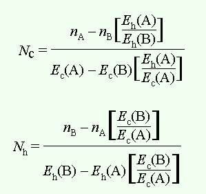
When the discriminator is set at a value to exclude all tritium counts in the upper window B (D 3 -D 2 ), then
N h E h (B) = 0
Thus n B = N c E c (B), or
| N c = | n B |
| E c (B) |
From this expression, it can be shown that
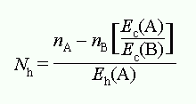
The level of quenching should be similar for the mixed isotope samples.
Hetenyi and Reynolds in 1967 used a graphical procedure to assess quenching in which the two channels and the ESR were employed. One channel (A) is set to the optimum window settings for counting tritium. Channel B is set so that its lower discriminator excludes 99.9% of the tritium counts. The ESR between channels A and B is assessed after each count. Both the tritium and carbon-14 water-quenched standards are counted for channel A and the carbon-14 counts in channel B along with ESRs for all samples. A plot of the percemt efficiency for tritium and carbon-14 versus the ESR of A/B is plotted. Another vertical axis of the overlap of carbon-14 (the ratio of counts in A to the counts in B) can also be plotted. Three lines are observed: one function is the plot of tritium efficiency in channel A against the ESR; function 2 is the plot of carbon-14 efficiency in channel B against the ESR; and function 3 is a plot of the ratio of carbon-14 in channel A to channel B against the ESR, which is used to estimate the degree of carbon-14 overlap into channel A from counts present in channel B. The proportion of overspill into channel A of carbon-14 is calculated from channel B:
channel B (cpm) × (A/B) = channel A overspill (cpm)
The dpm due to carbon-14 is obtained from channel B cpm, applying the efficiency data from function 2. The dpm due to tritium is obtained by subtracting the overspill in carbon-14 cpm from the total cpm in channel A, and then applying the efficiency from function 1. For a mixture of the three isotopes ( 32 P, 14 C, 3 H), Davies and Hall have described determination of their amounts (Anal Biochem 27: 77, 1969).
With increased quenching unfortunately the pulse height spectra of two isotopes overlaps considerably. Check for other publications that treat this subject.
Mixtures of gamma- and beta-emitters
It should be considered that while one may have a mixture of gamma- and beta-emitters, the gamma-emitter itself may produce beta particles that show up in counting. If the entire sample is precious for counting because the level of gamma-emitter is especially low, it is efficient to count the gamma-emitter first since it requires no fluors.
Statistics
For any count (
N
) or averages of counts, the standard deviation σ is √
N
. The standard deviation implies that 68.3% of the counts will appear
within the limits. Twice that (2σ) means 95% of all counts will occur
within the limits, which many instruments compute as the
percent error
of the counts. If given a sample cpm (
N
s
/
t
s
) and background cpm (
N
b
/
t
b
), then the standard deviations are √
N
s
/
t
s
) and √
N
b
/
t
b
). The 2σ deviation of the difference between the sample and background
is:
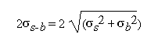
Fluorescence: Principles
(from notes by D. Lansing Taylor)
The time between absorption of a photon its emission by fluorescence is
about 10 nanoseconds (10
−8
sec), and so for those biological processes occuring at a rate of 10
8
/sec or more slowly, these are detectable and measurable. Measurements
of membrane potential, microviscosity, diffusion, molecular
re-orientation, ligand binding, supramolecular formation, and certain
chemical reactions.
Attributes of fluorescence include:
- specificity . Molecules absorb and emit at characteristic wavelengths and so probes can be used in a complex mixture.
Electrophoresis
Acrylamide and Bis-acrylamide
The acrylamide monomer and the crosslinker are added in different ratios to create gels of different porosities. The concentration of solutions are expressed as total acrylamide weight per volume, and the crosslinker as weight per weight of total acrylamide:
| %T = | grams acrylamide + grams crosslinker | × 100 |
| total volume (ml) |
| %C = | grams crosslinker | × 100 |
| grams acrylamide + grams crosslinker |
Note that the crosslinker can be one of three:
| Short Name | Long Name | Structure | Use/Purpose/Application |
|---|---|---|---|
| Bis | N,N′ -methylene-bis-acrylamide | 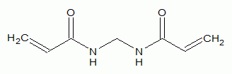 | a general crosslinker in PAGE |
| PDA | piperazine diacrylamide | 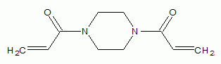 | provides high gel strength and increased resolution, and reduces background of silver stain in SDS-PAGE and 2D gels |
| DATD | N,N′ -diallyl-tartardiamide | 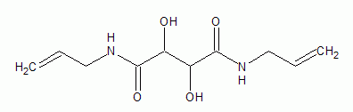 | a general crosslinker in PAGE |
Instead of %T and %C being given, a bottled might be labeled with the
acrylamide:bis
concentration. For example, it might be 29:1, indicating 29 g/100 ml (or
29%) acrylamide and 1 g/100 ml (or 1%) bisacryamide. The %T = 29 + 1 =
30%, and %C = 1 / 30 = 3.3%.
The most commonly used stock solutions are:
| Acrylamide:Crosslinker | %T | %C | Use |
|---|---|---|---|
| 19:1 | 20% | 5% | DNA sequencing |
| 29:1 | 30% | 3.3% | protein separation |
| 37.5:1 | 38.5% | 2.6% | protein separation |
Discontinuous SDS-Polyacrylamide Gel Electrophoresis
The system popularly used today was reported by U. K. Laemmli in Nature in 1970.
Reagents
- 1.5 M Tris HCl, pH 8.8 (4× Separating Gel Buffer)
- 0.5 M Tris HCl, pH 6.8 (4× Stacking Gel Buffer)
-
Acrylamide:bisacrylamide stock solution
prepare as 30% T:3.3% C by making 29.0 g acrylamide and 1.0 g bis in 100 ml distilled water - 10% SDS
-
4× Non-Reducing Sample Buffer: 0.5 M Tris, pH 6.8, 4% SDS, 40%
glycerol, 0.025% bromphenol blue
For Reducing Sample Buffer, include 2-mercaptoethanol to 5% (v/v) -
Electrode Buffer: 3 G Tris (base) + 14.4 G glycine in 1 liter water
this gives final concentration of 0.025 M Tris, 0.192 M glycine, pH 8.3
it is usually unnecessary to measure the pH.
Keep acrylamide/bisacrylamide a dark (foil-wrapped) bottle and cold since the amide groups may hydrolyze over time; it might be wise to use a mixed-bed resin to deionize any solution, or just prepare (or buy) new solution.
The table below has been constructed for providing the volumes for preparing the running and stacking gels for the miniature gel system of Bio-Rad Laboratories:
| Component | Running Gel Percentage | ||||
|---|---|---|---|---|---|
| 7.5% | 8% | 10% | 12% | 12.5% | |
| 1.5 M TrisHCl, pH 8.8 | 2.5 ml | 2.5 ml | 2.5 ml | 2.5 ml | 2.5 ml |
| 30:2.7% (T:C) Acrylamide:Bis | 2.5 ml | 2.67 ml | 3.3 ml | 4.0 ml | 4.17 ml |
| 10% SDS | 100 µl | 100 µl | 100 µl | 100 µl | 100 µl |
| distilled water | 4.85 ml | 4.68 ml | 4.05 ml | 3.35 ml | 3.18 ml |
| 10% ammonium persulfate | 50 µl | 50 µl | 50 µl | 50 µl | 50 µl |
| TEMED | 5 µl | 5 µl | 5 µl | 5 µl | 5 µl |
| Stacking Gel Percentage | |||||
| 4.0% | |||||
| 0.5 M TrisHCl, pH 6.8 | 2.5 ml | ||||
| 30:2.7% (T:C) Acrylamide:Bis | 1.3 ml | ||||
| 10% SDS | 0.1 ml | ||||
| distilled water | 6.1 ml | ||||
| 10% ammonium persulfate | 50 µl | ||||
| TEMED | 10 µl | ||||
The total volume prepared for the running gel is 10 ml, for the stacking gel 8 ml. Ammonium sulfate and TEMED are prepared to a final 0.05% of the solution. A 7.5% gel will separate suitably a range of proteins from 40 to 250 kDa, while a 12% gel will separate a range from 10 to 100 kDa.
Immunoblotting of Electrophoretically Separated Proteins (Western Blotting)
- Timmons TM, Dunbar BS (1990) Meth. Enzymol. 182 : 679-688.
The stages in Western blotting can be described as follows:
- Proteins are separated electrophoretically in a (polyacrylamide) gel, typically by SDS-PAGE (Laemmli system)
- The gel is floated on to a wetted protein-binding membrane (nitrocellulose, PVDF) in transfer buffer
- The proteins are electrophoretically transferred from the gel to the membrane, where they bind to the membrane
- The membrane is blocked using a generic protein or protein mixture for any nonspecific binding sites.
- The membrane is incubated with the primary antibody of interest
-
After rinsing well, the membrane is incubated with a labeled secondary
antibody: an antibody against the isotype of the primary antibody that
has been modified with an
illuminating agent
which might be a radioactive isotope or typically an enzyme catalyzing a reaction whose products precipitate (form polymers?) at the site of the reaction and which are distinctly visible often as colored bands - After rinsing out 2° antibody well, the substrates for the reaction are added if the label to the antibody is an enzyme. Some means of stopping the reaction are necessary to prevent over-illumination. This can be by dumping out the reaction and immediately adding water to dilute, or adding a chemical with inhibits or inactivates the enzyme. If the label to the 2° antibody was a radioisotope, autoradiography is done on the membrane.
Useful reports which show the development of the western can be found:
- Towbin H, Staehelin T, Gordon J (1979) Proc. Natl. Acad. Sci. USA 76 : 4350.
- Matsudaira P (1987) J. Biol. Chem. 262 : 10035.
- Tovey R, Baldo BA (1987) Electrophoresis 8 : 384.
Membrane Selection
Nitrocellulose was the first to be used. Polyvinylidene difluoride (PVDF) (Millipore Immobilon) has a lower binding capacity, but withstands wear-and-tear and organic chemicals better; moreover direct staining with Coomassie Brilliant Blue dyes and amino acid analysis and sequencing can be done with the membrane.
Electrophoretic Transfer
Several commercially available transfer/transblotting apparatuses can be used. These provide a compact chamber to minimize buffer use and a geometry for setting up the proper electric field to move the proteins properly from gel to membrane. The Bio-Rad Mini-Protean II can blot two minigels in 15-30 min. A unit for placing the gel and membrane in a sandwich so that they make constant contact is provided. Certain consumables are high quality filter paper (Whatman No. 3MM) cut to the size of gel and membrane, and often some sort of plastic pot-scrubber. Configurations vary from the old days, all such that the transfer process is optimized.
The transfer usually requires the Tris-glycine buffer used in SDS-PAGE, but with a methanol component of 10-20% (in older methods). One group recommends that alcohol not be used in the buffer, since it would appear to affect quantitative transfer because SDS would be removed from protein.
Matsudaira recommends using 10 mM 3-[cyclohexylamino]-1-propanesulfonic acid (CAPS) (CAS [1135-40-6]) at pH 9.0 or 11.0 which includes 10% methanol if the transfer is done to PVDF.
To make 10× transfer buffer stock, dissolve 30 g Tris base with 140 g glycine in 1 liter water. If methanol is to be added, add it when making the 1× stock.
- It helps to use rainbow MW markers for preparing westerns. Note that dyes attached to MW markers can be hydrolyzed under typical denaturing conditions, so it is important to limit the time of denaturation (to 1 min) and quickly load and run the gel
- The transfer membrane, gel, four sheets of filter paper, and two foam pads, all cut to the size of the gel approximately, are soaked in transfer buffer. PVDF should be wetted first in 100% methanol, then water, then in buffer.
- Most systems/methods advise or require that transfer be done in a chilled buffer because of the heat generated, especially if a rapid, high voltage transfer is to be done. If an overnight low voltage transfer is done, heating is not necessarily a consideration. Performing the transfer in a cold room or cold box is an option. The gel should be sandwiched to the membrane only after it has equilibrated in transfer buffer for at least 15 min (this also helps to remove some salts) and at the temperature at which the transfer is to be done.
-
Sandwiching the gel to membrane: most systems use a holding apparatus
that holds togther (from outer part to inner part)
- fiber pads (Scotch-Brite)
- one or two filter paper sheets (Whatmann 3MM)
- the membrane (nitrocellulose or PVDF) or gel
-
The conditions for setting up the electrical field vary. The time and
whether to use constant current or voltage or power is a function of
many factors, from temperature to buffer components and pH to the
kinds of proteins being transferred (are they very acidic or basic?).
Bio-Rad recommends for its Mini Protean II transfer system either a
standard
field 30 V overnight (current is about 90 mA). The high intensity field is set to 100 V for 1 h (Note the current is about 350 mA: caution! this is close to the maximum rated power limit of 40 W. It is advisable to set either a limit to cut off the power, or to set for constant current or power. The buffer heats up during the run, and the current will increase if the voltage is constant, causing the maximum power limit to be exceeded.)
Semi-Dry Electroblotting
Several companies (Bio-Rad, Hoefer, Millipore, Sartorius, Biometra) offer semi-dry transfer. The filter paper used in the sandwich are wetted with minimal buffer (excess is blotted out) and the transfer is done in 15-30 min. Graphite plates were given to pitting and corrosion, but the platinum/stainless steel hold up better.
Incubations of solutions with membrane
An orbital shaker or rocking platform will be essential to allowed for unattended long incubation periods.
The membrane is placed in the container which will be used for the incubations. A sealable bag is recommended, but a container with cover is necessary to minimize evaporative loss.
A volume of 0.1 mL per cm ^2 membrane will be the general rule for determining how much volume. If incubations done at room temperature figure on a 60-120 min time for each step.
Blocking Reagent
- 5% (w/v) nonfat dried (powdered) milk
- 0.01% antifoam A
- 0.02% sodium azide in PBS (pH 7.0-7.4)
The nonfat milk component can range from 3-5%. 3% BSA can also be used, but will be more expensive. As an alternative to PBS, TBS/azide can be used. If the antigen contains an oligosaccharide recognized by the antibody, it may be better to use PVP-40 (polyvinylpyrrolidone, avg MW 40,000) or Tween 20. Tween 20 to 0.02% is sometimes added for cases where the nonspecific binding of some antibody solutions is unacceptably high.
Note than sodium azide solutions should not be poured down sinks with metal drains or pipes: it is said that they form an explosive product on contact.
Primary Antibody
Secondary Antibody
If a peroxidase-conjugated 2° antibody is used, do not include azide in the washing solutions, since azide might interfere.
Illumination
Peroxidase reactions are best developed with the following three reagents:
- 1.0 mg/ml 3,3'-diaminobenzidine 4 HCl (DAB) in 0.1 M TrisHCl, pH 7.0
- 0.02% H 2 O 2 2
- 8.0% NiCl 2
Mix 20 ml of DAB reagent with 20 ml peroxide, then add 0.2 ml nickel chloride solution. Wash with buffer containing azide after color development is complete, then dry.
If there is a high background, consider the following:
- Poor blocking: increase concentration or time of block
- Inadequate washing between steps: ensure sufficient volumes and time
Isoelectric Focusing
(notes from Garfin, D. E. (1990) Meth. Enzymol. 182 , 459-477)
IEF use to be done in vertical columns in which density gradients of sucrose or glycerol were formed to stabilize the pH gradient against convection and to support separated zones. Nowadays analytical IEF is done in continuous polyacrylamide gels. Preparative IEF can be done in density gradients of granular polyacrylamide or dextrans are used; the rotating IEF device (the Rotofor cell) is becoming popular.
Polyacrylamide matrices can be used for focusing proteins up to 500,000 Da. For IEF, acrylamide and bisacrylamide must be polymerized with ammonium persulfate, TEMED, and illuminated riboflavin, with riboflavin being necessary since TEMED-APS do not work well at low pH. Since the gel must be nonsieving and stable, most gels are made of 5% (w/v) total acrylamide (acrylamide + bis), with cross-linking bis at 3% (w/w).
Agarose matrices are necessary for larger proteins or structures which do not focus well on polyacrylamide. Molecules >200 kDa can be focused on 1% agarose gels. Special agarose with low electroendoosmotic flow should be used.
Horizontal gel beds are usually the choice. Gels are cast on glass plates or specially treated plastic sheets. Platforms which are capable of cooling are superior. Power supplies should deliver up to 3000 V and 30 W. Gels are cast with carrier ampholytes, with the pH gradient established during the run concurrently with protein separation. A gel thickness of 0.8 to 1.0 mm is sufficient for good handling and loading capacity. Thinner gels of 0.2 to 0.4 mm allow higher voltages and shorter run times and increased resolution. Casting apparatuses use acrylic trays fitted to the glass plate with the proper spacing: after setting of the gel, the tray is lifted off without removing the gel since the monomeric solution does not wet the acrylic surface. Carrier ampholytes should be used at 2% (w/v); at 1%, unstable pH gradients are formed while at 3%, ampholytes are difficult to remove, will increase background staining, and interfere with staining of protein.
According to theory, the difference in pI (ΔpI) between two resolved bands on gels is directly proportional to the square root of the pH gradient and inversely proportional to the square root of the voltage gradient. Hence narrow pH ranges on gels and high applied voltages produce high resolution (small ΔpI). Electric fields of 100 V/cm are typical in IEF gels.
Gradient instability can occur after the steady state pH gradient is
reached. When focusing runs are extended (greater than 3 h in standard
setups), gradients deteriorate. This is the result of a decay of the
gradient toward the cathode with acidification at the anode and a
flattening of the gradient in the neutral region and loss of alkaline
bands. This mechanism, called
cathodic drift,
is not understood, but may be the result of electroendoosmosis, CO
2
absorption, and non-zero pI-dependent electrophoretic fluxes.
Stock solutions
| 25% T, 3% C) acrylamide | 24.25 g acrylamide + 0.75 g bisacrylamide in 100 ml water and filtered through 0.45 µ filter. Store protected from light at 4° up to 1 month |
| 25% glycerol (w/v) | 25 g glycerol brought to 100 ml with water |
| Carrier ampholytes | store as supplied by manufacturer (undiluted). Usually prepared as 20 or 40% (w/v) solutions. |
| 0.1% (w/v) riboflavin 5'-phosphate (FMN) | 50 mg riboflavin 5'-phosphate in 50 ml water. Store protected from light at 4° for up to 1 month |
| 10% (w/v) ammonium persulfate | 100 mg in 1 ml water. To be prepared daily |
| TEMED | store as supplied, cool and protected from light |
Strongly consider using treated polyester support film for polyacrylamide gels, especially thin ones. While gels will adhere to glass during the run, the gel will separate from the glass during staining and destaining. Detached gels can be frail because the acrylamide concentration is very low. Basic ampholytes may interfere with gel adhesion to support films, which can be compensated for by using a final 0.7 mg/ml APS concentration (84 µl of 10% APS in a 12 ml gel). Prolonged soaking of acidic staining and destaining should be avoided; soak only for the minimum time necessary.
Place a few drops of water on clean glass IEF plate and then put the
hydrophobic side of support film against the glass (water beads up).
Roll out the support film flat with test tube or similar object. Place
the glass plate on the casting tray with the gel support film facing
down. Measure out 6.6 ml water, 2.4 ml acrylamide:bis solution, 2.4 ml
25% glycerol, and 0.6 ml of a 40% ampholyte solution (or its proper
volume if not 40%). Degas the solution, then add 60 µl of 0.1% FMN, 18
µl APS, and 4 µl TEMED. Pour the solution between the film and the tray,
being careful not to introduce bubbles. A fluorescent lamp is placed
over the tray about 3-4 cm from the gel and illuminated for 45 min. The
gel is lifted from the tray, gently prying with a spatula. The plate is
turned over, gel facing upward, and the gel illuminated another 20 min
to polymerize monomer remaining on the gel surface. Gels can be used
immediately or stored at 4° several days covered in plastic wrap. Best
results are obtained by letting the gel
cure
overnight at 4° before use.
The best prepared samples are those which are salt-free and have no precipitates. Small volumes 1-10 µl in buffers of normally occurring strength are tolerated, but samples in deionized water, 2% ampholytes, or 1% glycine will give better results. Prior dialysis or gel filtration will give the excellent result. A minimum of 0.5 µg protein will produce a good band with dye stained gels while 50 ng protein/band will work for Ag staining. As for applying the sample, the simplest method is to incorporate the sample on filter paper strips and rest this on the gel surface. A 25 µl sample can be placed upon 1 cm 2 filter paper, while a convenient size is a 2 x 10 mm strip for a 5 µl sample. As to which part of the gel surface they should be applied, it is a good idea not to place the sample where it is expected to focus. If the protein is pH sensitive, do not apply it to the extreme edges of the gel (within 1 cm of either electrode). Pre-focusing the gradient can protect proteins from pH extremes. Some polypeptides are eluted most efficiently from the strips when applied to the anodic side of the gel. A good rule when focusing a protein for the first time is to apply the sample to 3 different areas of the gel length—near each electrode and in the middle of the gel. This is useful in estimating steady-state focusing. When patterns obtained on applying sample at opposite ends of the gel become identical, the steady state is assumed to have been reached. Sometimes the patterns obtained by applying on opposite ends of the gel are not identical, presumably because of an interaction of the protein with carrier ampholyte species.
The cooling platform should be set to 4°. Wet the platform with a few drops of water or 5% glycerol to ensure thermal contact with the backing. Place the gel on the platform and blot any excess liquid to eliminate possible electrical shorting paths. Cut electrode strips from thick filter or blotter paper; more than one thickness may be used. Strips should be 7 mm wide and 4 mm shorter than the width of the gel (preventing arcing to the cooling stage). Place the strips on a glass plate, wet them with appropriate electrolyte, remembering that the anode solution is acidic and the cathodic solution basic. For most routines, the cathode (negative terminal) solution is 1 N NaOH, while the anode (positive terminal) solution is 1 N H 3 PO 4 . With high voltages in the focusing of ultrathin (0.2 mm or less), a recommended cathode solution is 20 mM lysine + 20 mM arginine + 2 M ethylenediamine (0.36 g lysine, 0.34 g arginine, and 13.4 ml ethylenediamine in 100 ml; 2 M ethanolamine [12 ml/100 ml] can be used to substitute for the ethylenediamine), and a recommended anode solution is 20 mM aspartic acid + 20 mM glutamic acid (dissolve 0.26 g Asp and 0.29 g Glu in 100 ml). Blotted the wetted strips until slightly moist, place them on the gel surface at the ends making sure they do not extend over the sides. Now apply the samples impregnated on the filter paper strips, placing the strips 1 cm from the anode.
Position the electrodes for thorough contact. Set the power supply to 6 W per gel, with a 1500 V limit for standard size gel 10 x 12.5 cm x 0.8 mm. Total run time is 2 hr. The conditions will vary with the kind of samples applied, the efficiency of the cooling system, and deviations in gel geometry. At 6 W gels plateau at 1200-1500 V in about 60 min. When the voltage limit is reached, continue the run at constant voltage. Remove the sample strips at this time as well. Use of colored marker proteins can help monitor the run. Some use initial power setting of 10 W with final voltage gradients as high as 300 V/cm on 0.2 mm thin gels. When characterizing a run for standardization purposes, it is useful to express the run in terms of volt-hours as a guide to others. But keep in mind high voltages for shorter times produce better results than low voltages for long times.
For detecting protein bands, a standard staining method and other methods are presented. No fixing is required for some methods.
| Standard |
Stock staining solution is:
Isopropanol can substitute for ethanol. Dissolve the CuSO 4 in water before adding alcohol. Add the dyes to the solution last, then filter when dissolved. Stain can be re-used.. |
The Scarlet rapidly binds and fixes proteins, while the copper
sulfate enhances staining intensity.
Soak gels for 60 min.
|
|---|---|---|
| Quick Stain | 0.025% Coomassie Blue G-250 in 3.5% perchloric acid |
This method is as sensitive as the standard and requires no
destaining.
Immerse the gel 60 min. Intensify the staining with 7% acetic acid afterward |
| Silver stain |
|
First fix the gel in fixing solution for 1 hr, then follow for 2
hr in several volumes of soaking solution.
Continue with the Merril procedure, but it is necessary to soak the gel twice for 5 min ea. in 400 ml deionized water between the oxidizing and silver reagent steps, and for 1 min with the same volume of water between silver and developer steps. |
Gels may be dried directly on the support film in the air overnight. A heat gun at low setting can be used. Unsupported gels should be soaked in 7% acetic acid, 5% glycerol for 60 min, placed upon wetted filter paper and dried in a gel dryer.
pH gradients are best analyzed with colored or stained marker proteins. It is possible to cut pieces from the gel and soak them in degassed water or 10 mM KCl for 1-2 hr. Surface pH electrodes can be used as well.
Preparative IEF . Systems can fractionate milligrams to grams of protein with >90% recovery possible. Purification levels are 10- to 100-fold, putting them somewhere between ion-exchange and affinity ligand chromtagraphies as far as protein purification. Focusing is done in beds of granulated polyacrylamide or dextran.
BioRad markets a Rotofor cell in which IEF is done in free solution. Zones are stabilized not by means of density gradients since the column is turned on its side. Gravitationally induced convection is inhibited by rotating the column on its horizontal axis. The column is compartmentalized with screens of woven polyester which reduces fluid convection but does not hinder current flow or protein transport. When completed the segmentation of the column permits collection by fractions. The chamber holds 55 ml of sample, is divided into 20 compartments with a core of 19 polyester screen disks with a 6 µm pore. A ceramic cooling finger is located within to cool the run. The electrode assemblies and buffers are separated from the sample with ion-exchange membranes and gaskets. The electrolytes typically used are 0.1 M H 3 PO 4 at the anode and 0.1 M NaOH at the cathode. Runs at 4° can be done in 4 hr using 12 W constant power. Tubing connected to each of the compartments allows simultaneous collection into test tubes.
Two-dimensional gel electrophoresis
(notes from Dunbar, B. S., Kimura, H., Timmons, T. M. (1990) Meth. Enzymol. 182 , 441-459)
2-D PAGE was first described for use by O’Farrell in 1975. Its most common use is in analysis of proteins which may be posttranslationally modified. Estimates of pI and MW values of proteins are possible. For multisubunit proteins connected by disulfide bonds, only subunit MW values can be determined. Preparative 2-D PAGE is used to obtain rapidly amounts of protein to be used as an antigen for antibody production or for direct sequencing. It can also be used as an excellent method to assess protein purity.
Preparation of samples is critical to a good 2-D PAGE analysis. Tissue homogenates should be prepared using 0.2 to 0.5 mg per 2 ml solubilization buffer; cell pellets should be 20-50 µl cell pellet/0.3 ml solubilization buffer; 10 6 cells from culture should be mixed with 0.5 ml solubilization buffer; and protein should be 10-200 µg soluble protein in 30-50 µl buffer.
Two solubilization buffers can be used for the sample:
- SDS solubilization buffer: 50 mM CHES, 2% SDS, 10% glycerol, a small amount of bromphenol blue, pH 9.5. Add 2% 2-mercaptoethanol just before use. Samples are placed within tightly capped glass vials, heated for 5-10 min in a boiling water bath. (Microfuge tubes are plastic and conduct heat poorly.) Sometimes it is necessary to solubilize samples 2-3 hr with or without heating.
- Urea solubilization buffer: 9 M urea, 4% Nonidet P-40. Add 2% 2-mercaptoethanol and 2% ampholytes to a small aliquot just before use. Filter with a 0.2 µm filter before use. Solubilize without heating for 2 hr at RT.
Spin out any precipitable products which can interfere with focusing. A Beckman Ti-42.2 rotor with a 72-place chamber is recommended.
Prepare the IEF dimension by adding 8.25 g urea to 6 ml water with 2.0 ml acrylamide solution (30 g acrylamide:1.8 g bisacrylamide brought to 100 ml with water and 0.2 µm filtered). The dissolution of urea may be assisted with warm tap water, but do not heat. 0.75 ml ampholytes (in the range desired) are added, swirling the mixture, then it is de-gassed. 0.3 ml NP-40 is then added and mixed. 70 µl of 10% APS and 10 µl TEMED are added, mixed, and cast to a height of 12 cm into the tubes or slabs. Polymerize for 1 hr and then place in the electrophoresis chamber. Upper buffer is degassed 20 mM NaOH and lower buffer is 0.085% phosphoric acid. Gels are pre-focused for 1-2 hr at 200 V (this step may be omitted since pre-focusing does not seem to affect the ultimate pattern). Protein in 5-50 µl volumes is loaded with the upper buffer in place.
Focusing is then done for 10,000-12,000 V-hr (700 V for 17 hr). The higher the voltage and shorter the run, the better the result (700 V for 17 hr rather than 500 V for 22 hr). When done, remove the gel from the tube: can be done by putting a yellow pipet tip on a 3 ml syringe and inserting into the top of the gel, gently pushing it out. Immediately equilibrate the gel in a 125 mM Tris, pH 6.8, with 2% SDS, 10% glycerol and 0.2 to 0.8% 2-mercaptoethanol for 15 min. The IEF gel can be frozen at -70° as well until immediate use.
2-D electrophoresis
(notes from Chiron by R.O. Poyton)
Sample preparation
- Adjust membrane suspension to 5 mg/ml with 10 mM NaP i , pH 7.0, 1% 2-mercaptoethanol, 2% SDS.
- Heat at 37° for 30 min
- Boil for 2 min
- Freeze until needed.
- Just before use, thaw sample, incubate 37°/30 min.
- Adjust to 30 mM Tris, pH 7.0, 8 M urea, and apply immediately to IEF gel.
IEF
- Solution A—4 g acrylamide + 0.141 g bisacrylamide + 24 g urea to 50 ml with water.
- Solution B—1 mg riboflavin mononucleotide + 30 mg ammonium persulfate + 24 g urea to 50 ml with water.
- 10 M urea/10% TX-100—15 g urea + 12.5 ml 20% Triton X-100 to 25 ml with water.
- 40% ampholine—as supplied by manufacturer
- Gel overlay solution—3.6 g urea + 0.25 ml 40% ampholine to 10 ml with water (6 M urea-1% ampholine)
- Anode buffer—10 mM H 3 PO 4 : 1.04 ml conc. H 3 PO 4 to 1.5 l with water (pH ~2.2).
- Cathode buffer—20 mM NaOH: 0.8 g NaOH to 1.0 l with water (pH ~12.2).
Gels are cast by sealing the bottom of 3 mm i.d. tubes (12 cm long) with parafilm. For 20 ml of polymerizing solution (which will cast about 20-30 tubes worth), 10 ml Solution A + 5 ml Solution B + 4 ml 10 M urea/10% TX-100 + 1 ml 40% ampholine, all combined at room temperature. Bring to an 8 cm height in the tube. Use a pasteur pipette and avoid air bubbles. Overlay tubes with 20 µl water to form flat surface. Put under a fluorescent lamp for 30 min.
After polymerization, remove parafilm and put in place nylon mesh stretched tight with a rubber sleeve to provide support. Place the tubes in the unit with cooling set at 7°. Fill reservoirs with electrode buffers (top=cathode buffer=20 mM NaOH). Pre-focus using 0.5 mA per tube for 30 min or until 270 V is reached. Replace the cathode buffer with fresh buffer, then add 15 µl of gel overlay solution on top of each gel. Underlay the sample (in a 10-25 µl volume) between the gel overlay and the gel.
If the gel was not pre-focused, start focusing at 1 mA per tube until 34 V/cm is reached (270 V/cm for 8 cm gels). Set to constant voltage of 264 V to the end of the run.
SDS-PAGE (2nd dimension): perform as usual when making SDS gels.
Detection and quantification of phosphotyrosine in proteins
Cooper, J. A., Sefton, B. A., Hunter, T. (1983) Meth. Enzymol. 99 , 387-402.
Most tyrosine protein kinases studied so far appear to be involved in growth control. Tyrosine phosphate content increases 5-10 times after growth factor stimulation or after a response known to increase tyrosine kinase activity.
In working with phosphoamino acids, consideration of the high stability of P-Tyr and relative high stability of P-Thr at alkaline pH values should be considered. With proteins treated in alkaline solutions, the content of these phosphoamino acids is likely to increase.
Specific anti-phosphotyrosine antibodies (available from sera and as MAbs) allow immunological identification of phosphotyrosine proteins. These antibodies are useful in the analysis (Western blotting) and in the preparation/enrichment of phosphotyrosine-containing proteins (immunoaffinity chromatography).
Since artefactual loss of phosphotyrosine and artefactual transfer of phosphate to tyrosine can occur when working with phosphotyrosine proteins, thus distorting at least quantitative analyses, it is important to work in the cold and to denature the protein as soon as possible. Chelators of divalent cations should be used to inhibit tyrosine kinase activity, which depend upon such metals. With radiolabeled proteins, rapid dilution of any labeled ATP present with unlabeled ATP will reduce the possibility that labeling reactions will be stopped. Tyrosine phosphatases are somewhat poorly characterized: use of Zn 2+ in trace amounts will inhibit, but this is not compatible with the use of chelators and deoxycholate-containing buffers. Adding free P-Tyr or its analogs can also be useful in tying up phosphatases.
Phosphotyrosine has been synthesized directly by heating L-tyrosine with P 2 O 5 in H 3 PO 4 at 100° for 72 h in a previously described procedure (Rothberg et al., Proc. Natl. Acad. Sci. USA 75: 4868, 1978). Ion-exchange chromatography is used to purify the product with yields between 60-70%. Commercially available phosphotyrosine can be purchased. Its MW is 261. UV spectral data indicates an absorption maximum (at pH 3) at 265 nm with a distinct shoulder at 270 nm (ε m = 500). At pH 12 the maximum is shifted only slightly (λ max = 268 nm and shoulder at 274 nm). Tyrosine itself has a maximum at 275 nm with a 281 nm shoulder in water (ε m = 1350) but its spectral properties shift dramatically in alkaline solutions. The fluorescence yield of phosphotyrosine is reduced relative to tyrosine, which may serve as a distinction: with a 265 nm excitation and 293 nm emission of P-Tyr in water, the yield is 13,000; tyrosine at a 274 nm excitation and 302 nm emission shows a molar yield of 26,000. P-Tyr is soluble in water at pH 7 up to 1 M (25°) while tyrosine is much less soluble, being saturated at 2 mM at 25°. P-Tyr is less stable in strong acid (50% hydrolyzed in 1 M HCl, 5 h at 100°) than in strong alkali (1% hydrolyzed in 1 M NaOH, same time and temp).
Nonradioactive P-Tyr may be detected by analysis on HPLC which has post-column derivitization chemistry using fluorescamine or o -phthalaldehyde (see Yang et al., Anal. Biochem. 122 : 360, 1982; Swarup et al., J. Biol. Chem. 256 : 8197, 1981). Radioimmunoassay using anti-P-Tyr sera is also used, although none of these methods is as sensitive as direct radiolabeling where possible.
Cells labeled with [5,6- 3 H]tyrosine do accumulate appreciable amounts of [ 3 H]phosphotyrosine, but acid-catalyzed proton exchange can cause loss of label in samples prepared for amino acid analyses. [ 14 C]tyrosine has specific activities too low for practical use. Radioiodination of phosphotyrosine is not considerable since the electron-withdrawing effect of para-positioned phosphate will affect chemical or enzymatic iodination.
Besides 32 P as a label, 33 P can be used to label tyrosine in vivo or in vitro. Generally 33 P is more expensive with lower specific activity, but its lower energy spectrum permits higher resolution and reduced radiation exposure. Direct autoradiography and fluorography can be used in its detection.
In vivo labeling should be done in consideration of allowing phosphate
enough time to reach
steady state
level of specific radioactivity. Equilibration is important in processes
causing rapid turnover of the pool of ATP during the labeling period,
such as occurs when cells are treated with EGF or serum.
32
P
i
added together with serum causes ATP specific radioactivity to change
2.4-fold in 1 h. Routinely, cells in 35 mm dishes are treated for 16-18
h with
32
P
i
at 1 mCi/ml in DME medium without phosphate, supplemented with 4%
undialyzed calf serum. Serum [P
i
] is about 1.5 mM, so the label in the medium represents about 6% of the
total [P
i
]. The medium specific radioactivity is about 17 Ci/mmol. For preparing
individual proteins for analysis, 3 mCi/ml
32
P
i
may be used but radiolytic toxicity becomes significant here.
In vitro labeling using gamma labeled 32 P and 35 S ATP products or other nucleoside triphosphates is desirable where possible. Other requirements are for Mg 2+ or Mn 2+ and neutral pH buffers. Since most kinases work with micromolar ATP amounts, it may be unnecessary to dilute with cold ATP. 20 mM 1,4-piperazinediethanesulfonic acid (PIPES), pH 7.0 with 10 mM MnCl 2 proves useful under many occasions, even with immunoprecipitates of active kinases such as viral transforming proteins and PDGF and EGF receptors.
Estimation of P-Tyr in total cellular protein
For a 35 mm dish of 32 PP-labeled cells:
- Wash cells 2 X with cold buffered saline and drain well
- Add 0.3 ml RIPA with 2 mM EDTA (RIPA = 1% NP-40, 1% sodium deoxycholate, 0.1% SDS, 0.15 M NaCl, 10 mM NaP i , pH 7.0, 1% Trasylol [from Mobay Chem. Corp.]).
- Scrape with rubber policeman, leave dish at 4° for 10 min to solubilize adherent structures, scrap again, transfer to 1.5 ml tube
- Spin 14000 rpm in SS24 rotor or JA21 rotor (20,000 g) for 20 min at 2°.
- Transfer supernatant to 1.5 ml tube containing 400 µl NTE (NTE=0.1 M NaCl, 10 mM TrisHCl, pH 7.5, 1 mM EDTA) and 0.4 ml buffer-saturated phenol (redistilled) at room temp.
- Vortex highest speed for 30 s. Spin 1 min at room temp.
- Discard aqueous layer without disturbing interface, re-extract phenol layer once with 800 µl NTE, discard aqueous layer after spinning and do not disturb interface. (Nucleic acids are removed.)
- Transfer phenol layer to 30 ml Corex tube, add 13 ml water and 2 ml 100% TCA. Mix and let stand 1 h at 0°. No carrier protein is necessary since RIPA acts as a carrier for TCA precipitation.
- Spin 10000 rpm in HB4 or JS13 rotor/8000 rpm in SS-34 for 10 min at 2°. Decant supernatant to obtain protein pellet.
- Extract pellet with 5 ml chloroform:methanol (2:1 at room temp) with shaking. This removes detergent. Spin for 10 min to collect protein precipitate.
- The pellet is air-dried. The dry pellet is dissolved in 200 µl 5.7 M HCl at 100° for 2 min, then transferred to 13x100 screw cap (Pyrex) tubes with two 100 µl washes of 5.7 M HCl.. As a rule 3x10 6 dpm in the protein release 500 dpm P-Tyr after partial acid hydrolysis.
Oligosaccharide and Monosaccharide Separation by PAGE
Jackson, P. (1990)
Biochem. J.
270
, 705-713.
The use of polyacrylamide gel electrophoresis for the high-resolution
separation of reducing saccharides labelled with the fluorophore
8-aminonaphthalene-1,3,6-trisulphonic acid. Detection of picomolar
quantities by an imaging system based on a cooled charge-coupled
device
Chromatography (largely HPLC) is used to purify and partially characterize glycoconjugates in biological processes. MS and NMR are then typically used for further, combined with derivatization and degradation techniques. MS provides no information regarding anomeric configuration of glycosidic linkages, and sometimes sample sizes must be large for complete study. The use of enzymatic degradation makes analysis possible if improvements in detection of the small (picomolar) quantities is afforded. Often, substances are labeled with 3 H or a fluoro- or chromophore and the derivative analyzed chromatographically or electrophoretically. A method is described here which labels reducing ends of saccharides with a fluorophore (ANTS), the derivatives separated on simple polyacrylamide gels, and visualized as bands in the subpicomolar range.
RESULTS . 8-aminonapthalene-1,3,6-trisulphonate disodium (ANTS) is available from Molecular Probes (Eugene OR). Hydrolyzed wheat starch and saccharides, α-amylase, and β-galactosidase are from Sigma or Aldrich. [U- 14 C]glucose [10 GBq/mmol] is from Amersham. 5 or 10 µl of 1 mM saccharide solutions prepared in water are dried in a centrifugal vacuum evaporator (Gyrovap, UK). To the dry sample is added 5 µl of 0.20 M ANTS in acetic acid/water (3:17 v/v) and 5 µl of 1.0 M NaBH 3 CN in DMSO. After vortexing and spinning in a centrifuge (to bring all reactants together), incubation was at 37° for 15 h. The centrifugal vacuum evap was set to 45° and the reaction then dried for 4 h. Dissolution in a sample buffer volume to produce 100 pmol/µl saccharide was done. These can be stored at -70° until use. As for enzymatic digestions, 50 µl of a wheat starch at 10 mg/ml in 0.1 M ammonium acetate, pH 5.5, at 37° was combined with 5 µl of a solution containing 0.75 µg/ml B. subtilis α-amylase and incubated 30 min. Digestion was stopped with ice-cold EtOH and dried in the centrifugal vac evap. The digestion products were treated with ANTS and then dissolved in 50 µl electrophoresis sample buffer, of which 2.0 µl was used in each lane. Special oligosaccharides were treated with β-galactosidase and then also reacted with ANTS.
The optimal reaction conditions for ANTS labeling were determined first with three test saccharides: glucose, lactose, and maltopentaose. Acetic acid concentration was varied from 0-20%. Between 5% and 20%, the extent of derivatization was the same. Without acetic acid (0%), derivitization was 84% of that achieved with the 5-20% range. A 3:17 (v/v) acetic acid:water medium was used for stanard conditions (15%) The time course was also studied and the reactions for all three test saccharides followed similar time courses. All reactions were complete in 12 h at 37° C, and 15 h was chosen for standard conditions.
The ANTS concentration was then varied with 25 nmol of each test material. Maximum derivitization was obtainable with 0.1 M, so 0.2 M was used for standard conditions. Similar results for 2.5 nmol test material were seen, so the amount of test material showed no effect.
Confirmation of reaction conditions with [U- 14 C]glucose showed that >99% of the glucose reacts and 92% of the radioactivity was found in a new single band which was in fact fluorescent. The other 8% was found in the TLC plate lane which may have been due to impurities of the glucose.
25 nmol of test sugar was derivatized and the reaction products taken up in 100 µl electrophoretic buffer. Serial dilutions were done and 2 µl from each dilution run on a gel and the bands analyzed. The log of the absorbance of a film spot was measured and plotted against the logarithm of the amout of sugar corresponding to each band. The results show that the film response drops off for the greater amounts of sugar tested. Moreover, film does not provide the needed sensitivity at the lower amounts. Although a film spot can be detected by eye with as little as 1 pmol, it is not possible to accurately measure film absorbances below 5 pmol per band.
Use of the CCD imaging system and the plot of log of fluorescence (mean net photons registered per minute per CCD pixel per band) vs. log of pmol per band showed very good linearity from as little as 1 pmol per pand to 500 pmol. This was determined by imaging gels for either 10 s or 60 s (normalizing the image to a 60 s background). Std error of the mean was 5.1% for measurement of the maltopentaose in the range 12.5 to 500 pmol.
35 different saccharides were analyzed with this system and their relative mobilities dertermined. In principle as the size of the saccharide increases, its mobility is reduced. Numerous saccharides with identical molecular weights could nonetheless be separated on the system. 6-Deoxyglucose had the highest mobility and was well separated from three isomers. The epimers glucose and galactose resolve, but galactose and mannose do not. N -acetylglucosamine and N -acetylgalactosamine resolve, but the former has the same mobility as galactose. Disaccharides also show large differences in mobility.
Electrophoresis of insulin and related peptides
Reagents required:
- Sample buffer: 8 M urea in 10 mM Tris HCl, pH 7.5. Aliquot and store in -80°.
- 20X running buffer: 12 G Tris, 58 G glycine in 1 liter water. Store at 4°.
- 2X spacer buffer: 3.75 G Tris, adjusted to pH 6.7 with HCl, qs to 250 ml.
- 5X lower buffer: 23 G Tris, adjusted to pH 9 with HCl, qs to 100 ml.
- Acrylamide/bisacrylamide: 40 G acrylamide, 2 G bisacrylamide in 100 ml. Store 4°.
- 10% Tween-80 (made fresh): 900 µl water plus 100 µl Tween-80. Tween-80 is an ester which may hydrolyze during storage.
- Modified Bailey's Reagent (for oxidate sulfitolysis): 0.945 G sodium sulfite (anhydrous), 0.81 G sodium tetrathionate 2 H 2 O, 48 G urea. Adjust to pH 7.5 with acetic acid. Add 10 mM Tris HCl, pH 7.5 to 100 ml. Filter, store in aliquots at -80°.
Prepare gels as follows. Use the 30% gel for sulfitolyzed insulin to look at the A and B chains, which have R f values of 0.83 and 0.30, resp. Use the 12% gel to look at insulin and proinsulin, which have R f values of 0.60 and 0.40, resp.
| 12% | 30% | Upper | |
|---|---|---|---|
| Spacer buffer | – | – | 2 ml |
| Lower buffer | 0.8 ml | >0.8 ml | – |
| Acrylamide/Bis | 1.2 ml | 3.0 ml | 0.6 ml |
| water | 2 ml | 0.2 ml | 1.4 ml |
| 10% Tween-80 | 4 µl | 4 µl | 4 µl |
| TEMED | 5 µl | 5 µl | 5 µl |
| 10% ammonium persulfate | 7 µl | 7 µl | 7 µl |
If there is no oxidative sulfitolysis, then just dilute sample in sample buffer at room temperature. Do not boil or carbamylation may occur. For samples to undergo oxidative sulfitolysis, 1 µl of Bailey's Reagent added to the lane will oxidize 2 µG insulin. Note however that the salts in the reagent interfere with the electrophoresis. Dry the sample, take it up in 1 µl Bailey's and add 2 µl of 8 M urea/10 mM Tris. Incubate 2 hr at 37°, add 5 µl urea/Tris, then load on to the gel.
After electrophoresis, place gel in a solution made by adding 34 µl 1 M cysteamine in 100 ml water. Shake for 5 min. This will allow silver staining of the S-sulfo A chain of insulin. Proceed to Ag stain as follows (~100 ml and 10 min per step):
- 50% MeOH, 10% acetic acid
- 5% MeOH, 7% acetic acid
- 10% glutaldehyde
- 3 changes of water
- 34 µl 0.1 M DTT in 100 ml
- 0.1% silver nitrate
- water: very quick rinse
- developer (3% sodium carbonate with 50 µl 37% formaldehyde): two quick rinses then the regular.
Siliconizing Plasticware
(taken from Sambrook, Fritsch, Maniatis, Molecular Cloning: A Laboratory Manual, 1989)
Method used by B. Seed:
- Put items in a dessicator.
- To a small beaker, add 1 ml of dichlorodimethylsilane. Place in dessicator
- Through a trap to vacuum pump, apply suction until dichlorodimethylsilane starts to boil. Immediately clamp the hose to disconnect. Vacuum should be maintained. Caution: damage to vacuum pump seals can occur if silane compound gets to pump.
- After 1-2 hours, vent dessicator to hood. Bake glassware for 2 hr at 180°. Rinse plasticware extensively in water.
Another method is to soak or rinse plasticware in a 5% dichlorodimethylsilane in chloroform or heptane. As solvent evaporates, a coat is deposited on the material. Glassware should be rinsed in water or baked at 180° for 2 h.
Theory of operation of a pH meter
The standard calomel electrode pH system is diagrammed below. Note this is a combination electrode. The phases of the electrode can be shown as the following:
Ag-AgCl | 0.1 M HCl | glass || test solution || sat’d KCl | HgCl 2 -Hg
It can be given the E = E ref − E glass . Now E ref = + 0.250 V at room temperature. The following is true for the glass electrode voltage:
E glass = 0.342 − 0.058 pH s
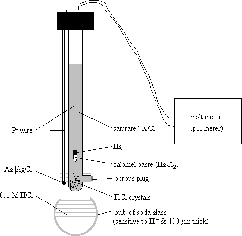
Reference Tables in Biochemistry
The Amino Acids
| 3-letter abbr. | 1-letter abbr. | MW | Side-chain structure | p K a | ||
|---|---|---|---|---|---|---|
| Non-polar Amino Acids | ||||||
| Alanine | Ala | A | 89.1 | 2.35 | α-COOH | |
| 9.69 | α-NH 2 | |||||
| Valine | Val | V | 117.1 | 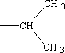 | 2.32 | α-COOH |
| 9.62 | α-NH 2 | |||||
| Leucine | Leu | L | 131.2 | 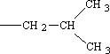 | 2.36 | α-COOH |
| 9.60 | α-NH 2 | |||||
| Isoleucine | Ile | I | 131.2 | 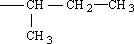 | 2.36 | α-COOH |
| 9.68 | α-NH 2 | |||||
| Phenylalanine | Phe | F | 165.2 | 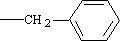 | 1.83 | α-COOH |
| 9.13 | α-NH 2 | |||||
| Tryptophan | Trp | W | 204.2 | 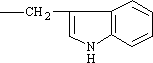 | 2.38 | α-COOH |
| 9.39 | α-NH 2 | |||||
| Methionine | Met | M | 149.2 | 2.28 | α-COOH | |
| 9.21 | α-NH 2 | |||||
| Proline | Pro | P | 115.1 | 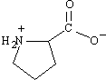 | 1.99 | α-COOH |
| 10.60 | α-NH- | |||||
| Polar Amino Acids | ||||||
| Glycine | Gly | G | 75.1 | 2.34 | α-COOH | |
| 9.60 | α-NH 2 | |||||
| Serine | Ser | S | 105.1 | 2.21 | α-COOH | |
| 9.15 | α-NH 2 | |||||
| Threonine | Thr | T | 119.1 | 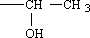 | 2.63 | α-COOH |
| 9.15 | α-NH 2 | |||||
| Cysteine | Cys | C | 121.2 | 1.71 | α-COOH | |
| 8.33 | side chain | |||||
| 10.78 | α-NH 2 | |||||
| Tyrosine | Tyr | Y | 181.2 | 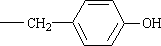 | 2.20 | α-COOH |
| 9.11 | α-NH 2 | |||||
| Asparagine | Asn | N | 132.1 | 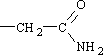 | 2.02 | α-COOH |
| 8.80 | α-NH 2 | |||||
| Glutamine | Gln | Q | 146.1 | 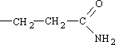 | 2.17 | α-COOH |
| 9.13 | α-NH 2 | |||||
| Ionic Amino Acids | ||||||
| Aspartic Acid | Asp | D | 133.1 | 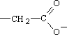 | 2.09 | α-COOH |
| 3.86 | side chain | |||||
| 9.82 | α-NH 2 | |||||
| Glutamic Acid | Glu | E | 147.1 | 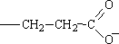 | 2.19 | α-COOH |
| 4.25 | side chain | |||||
| 9.67 | α-NH 2 | |||||
| Lysine | Lys | K | 146.2 | 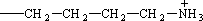 | 2.18 | α-COOH |
| 10.53 | side chain | |||||
| 8.95 | α-NH 2 | |||||
| Arginine | Arg | R | 174.2 | 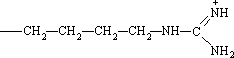 | 2.17 | α-COOH |
| 12.48 | side chain | |||||
| 9.04 | α-NH 2 | |||||
| Histidine | His | H | 155.2 | 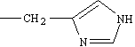 | 1.82 | α-COOH |
| 6.00 | side chain | |||||
| 9.17 | α-NH 2 | |||||
|
ΔE´ (pH 7)
volts |
|||
|---|---|---|---|
| ½ O 2 + 2 H + + 2 e − | → | H 2 O | + 0.816 |
| Fe 3+ + 1 e − | → | Fe 2+ | + 0.771 |
| ½ O 2 + H 2 O + 2 e − | → | H 2 O 2 | + 0.30 |
| cytochrome a -Fe 3+ + 1 e − | → | cytochrome a -Fe 2+ | + 0.29< |
| cytochrome c -Fe 3+ + 1 e − | → | cytochrome c -Fe 2+ | + 0.25 |
| 2,6-dichlorophenolindophenol ox + 2 H + + 2 e − | → | DCPP red | + 0.22 |
| crotonyl-CoA + 2 H + + 2 e − | → | butyryl-CoA | + 0.19 |
| methemoglobin + 1 e − | → | hemoglobin | + 0.139 |
| ubiquinone + 2 H + + 2 e − | → | ubiquinoneH 2 | + 0.10 |
| dehydroascorbate + 2 H + + 2 e − | → | ascorbate | + 0.06 |
| fumarate + 2 H + + 2 e − | → | succinate | + 0.03 |
| FAD + 2 H + + 2 e − | → | FADH 2 | −0.06 |
| oxaloacetate + 2 H + + 2 e − | → | malate | −0.102 |
| pyruvate + NH 3 + 2 H + + 2 e − | → | alanine | −0.130 |
| α-ketoglutarate + NH 3 + 2 H + + 2 e − | → | glutamate | −0.14 |
| acetaldehyde + 2 H + + 2 e − | → | ethanol | −0.163 |
| pyruvate + 2 H + + 2 e − | → | lactate | −0.190 |
| riboflavin + 2 H + + 2 e − | → | riboflavin-H 2 | −0.200 |
| 1,3-diphosphoglyceric acid + 2 H + + 2 e − | → | glyceraldehyde-3-P + P i | −0.290 |
| acetoacetate + 2 H + + 2 e − | → | β-hydroxybutyrate | −0.290 |
| NAD + + H + + 2 e − | → | NADH | −0.320 |
| NADP + + H + + 2 e − | → | NADPH | −0.320 |
| pyruvate + CO 2 + 2 H + + 2 e − | → | malate | −0.330 |
| uric acid + 2 H + + 2 e − | → | xanthine | −0.360 |
| acetyl-CoA + 2 H + + 2 e − | → | acetaldehyde + CoASH | −0.410 |
| CO 2 + 2 H + + 2 e − | → | formate | −0.420 |
| H + + 1 e − | → | ½H 2 | −0.420 |
| ferredoxin-Fe 3+ | → | ferredoxin-Fe 2+ | −0.432 |
| acetate + 2 H + + 2 e − | → | acetaldehyde | −0.60 |
| acetate + CO 2 + 2 H + + 2 e − | → | pyruvate | −0.70 |
|
Δ
G
´ (pH 6-8)
kcal/mol |
||||
| Pyrophosphate esters | APS | ↔ | AMP + SO 4 2- | −18 |
| PP i | ↔ | 2 P i | −3? −7?* | |
| ATP | ↔ | ADP + P i | −7.7 to −8 | |
| ATP | ↔ | AMP + PP i | −11? −8.6? | |
| ADP | ↔ | AMP + P i | −6.4 | |
| acyl phosphates | acetyl-P i | ↔ | acetate + P i | −10 |
| 1,3-diphosphoglycerate | ↔ | 3-PGA + P i | −12 | |
| thioester | acetyl-CoA | ↔ | acetate + CoASH | −8.2 |
| enolic phosphate | PEP | ↔ | ketopyruvate + P i | −12.8 |
| guanidinium phosphate | creatine-P i | ↔ | creatine + P i | −10.5 |
| hemiacetal phosphate | α- d -glucose-1-P | ↔ | α- and β- d -glucose + P i | −5 |
(
energy poor) |
AMP | ↔ | adenine + P i | −2 |
| simple | glucose-6-P | ↔ | glucose + P i | −3 |
| phosphate esters | α-glycerophosphate | ↔ | glycerol + P i | −2.5 |
| MW |
Diffusion constant
(D × 10 7 ) |
Sedimentation constant
(S) |
pI | |
|---|---|---|---|---|
| cytochrome c (bov. heart) | 13,370 | 11.4 | 1.17 | 10.6 |
| myoglobin (horse heart) | 16,900 | 11.3 | 2.04 | 7.0 |
| chymotrypsinogen (bov. pancreas) | 23,240 | 9.5 | 2.54 | |
| β-lactoglobulin (goat milk) | 68,500 | 6.1 | 4.6 | 4.8 |
| serum albumin (human) | 64,500 | 6.9 | 4.5 | 6.9 |
| catalase (horse liver) | 247,500 | 4.1 | 11.3 | 5.6 |
| urease (jack bean) | 482,700 | 3.46 | 18.6 | 5.1 |
| fibrinogen (human) | 339,700 | 1.98 | 7.6 | 5.5 |
| myosin (cod) | 524,800 | 1.10 | 6.4 | |
| tobacco mosaic virus | 40,590,000 | 0.46 | 198.0 |
Enzyme Characteristics
Examples of metal ion requirements
| Na | intestinal sucrose α- d -glucohydrolase |
| K | pyruvate kinase (also requires Mg) |
| Mg | kinases: hexokinase, pyruvate kinase; ATPases-ATP hydrolases: myosin ATPase |
| Fe | catalase, peroxidase, nitrogenase |
| Zn | alcohol dehydrogenase, carboxypeptidase |
| Mo | xanthine oxidase, nitrogenase |
| Cu | cytochrome c oxidase, amine oxidase |
| Pyridoxal phosphate | 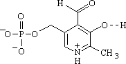 | as a Schiff base to a lysine residue in the apoenzyme |
decarboxylation
transamination racemization |
| biotin | 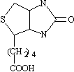 | ||
| lipoic acid | 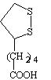 | ||
| thiamin pyrophosphate | 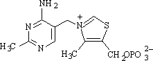 | ||
|
flavin adenine dinucleotide (FAD)
flavin mononucleotide (FMN) |
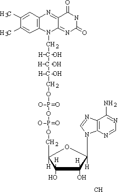 | ||
| Folic acid | 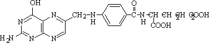 |